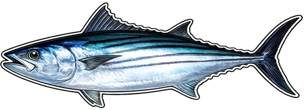

<!doctype html>
<html lang="en">
<head>
<meta charset="utf-8">
<meta name="viewport" content="width=device-width, initial-scale=1, viewport-fit=cover, user-scalable=no">
<title>FISHDEX</title>
<meta name="description" content="Pokédex-style fishing collection tracker">

<!-- PWA -->
<link rel="manifest" href="manifest.json">
<meta name="theme-color" content="#0a2942">
<meta name="apple-mobile-web-app-capable" content="yes">
<meta name="apple-mobile-web-app-status-bar-style" content="black-translucent">
<meta name="apple-mobile-web-app-title" content="FISHDEX">

<!-- Icons -->
<link rel="icon" type="image/png" sizes="32x32" href="favicon-32.png">
<link rel="icon" type="image/png" sizes="16x16" href="favicon-16.png">
<link rel="apple-touch-icon" sizes="180x180" href="icon-180.png">
<link rel="apple-touch-icon" sizes="167x167" href="icon-167.png">
<link rel="apple-touch-icon" sizes="152x152" href="icon-152.png">
<link rel="apple-touch-icon" sizes="120x120" href="icon-120.png">
<link href="https://fonts.googleapis.com/css2?family=Bungee&family=Bricolage+Grotesque:wght@400;600;700&display=swap" rel="stylesheet">

<!-- Map: Leaflet + markercluster, self-hosted in lib/ (no CDN, no API key) -->
<link rel="stylesheet" href="lib/leaflet/leaflet.css">
<link rel="stylesheet" href="lib/leaflet/MarkerCluster.css">
<link rel="stylesheet" href="lib/leaflet/MarkerCluster.Default.css">
<script src="lib/leaflet/leaflet.js"></script>
<script src="lib/leaflet/leaflet.markercluster.js"></script>
<script>
  // Apply saved theme synchronously before paint to avoid flash-of-default-theme.
  // Whitelist of valid ids must match the THEMES array in the module script below.
  (function(){
    try {
      var t = localStorage.getItem('fishdex:theme:v1');
      var ok = ['default','sunset','night','ice','beach'];
      if (t && ok.indexOf(t) !== -1 && t !== 'default') {
        document.documentElement.setAttribute('data-theme', t);
      }
    } catch(_) {}
  })();
</script>
</head>
<body>
<div class="seabed-glow"></div>
<div class="seaweed-layer"></div>
<style>
  :root {
    /* === GREENISH OCEAN PALETTE — matches FISHDEX icon (DEFAULT THEME) === */
    --bg-deep:    #0d3a36;  /* deep teal-black, journal cover dark */
    --bg-mid:     #1a5d56;  /* mid teal */
    --bg-shallow: #2e8a7a;  /* lighter sea-green */
    --bg-surface: #5fb8a3;  /* sunlit shallow */

    --foam: #f0fff8;
    --ink: #0a2520;
    --ink-soft: #1f3a35;
    --paper: #f4ead5;
    --paper-edge: #d9c896;
    --paper-shadow: #a08856;

    /* === AMBIENT (themable) === */
    --ambient-glow: 255, 248, 200;        /* RGB triplet for top-of-screen glow */
    --ambient-glow-strength: 1;           /* 0..1 multiplier; 0 = no top glow (e.g. night) */
    --rays-opacity: 1;                    /* 0..1 god-ray strength */
    --drift-color: 220, 255, 240;         /* RGB triplet for drifting particle dots */
    --drift-opacity: 1;                   /* 0..1 particle strength */
    --seabed-tint: 8, 46, 40;             /* RGB triplet for seabed darkening glow */
    --seabed-strength: 0.55;              /* 0..1 seabed darkening */

    /* === FOREGROUND SILHOUETTE (themable) === */
    --silhouette-color: #062520;          /* color of bottom silhouette */
    --silhouette-height: 180px;           /* layer height */
    --silhouette-sway: swayWeed;          /* animation name */
    /* Default = seaweed. Each theme overrides --silhouette-svg with a data URI mask. */
    --silhouette-svg: url("data:image/svg+xml;utf8,<svg xmlns='http://www.w3.org/2000/svg' viewBox='0 0 400 180' preserveAspectRatio='none'><g fill='black'><path d='M20,180 C18,150 30,140 25,120 C20,100 35,90 30,70 C25,55 38,45 35,30 C40,38 48,52 45,70 C50,88 42,98 46,118 C50,138 38,150 42,180 Z'/><path d='M55,180 C53,160 60,148 56,128 C52,110 64,100 62,82 C66,90 72,102 70,118 C72,134 64,144 68,180 Z'/><path d='M90,180 C88,156 98,144 95,124 C92,108 102,98 100,80 C95,68 105,55 102,40 C108,52 115,68 112,84 C115,100 108,112 112,128 C116,148 106,160 110,180 Z'/><path d='M135,180 C133,164 140,152 138,134 C140,148 145,158 143,180 Z'/><path d='M165,180 C162,150 175,140 170,118 C166,98 180,88 175,68 C170,52 184,42 180,28 C188,40 195,55 192,72 C198,90 188,100 192,120 C196,142 184,152 188,180 Z'/><path d='M210,180 C208,158 215,148 212,130 C218,140 224,152 222,180 Z'/><path d='M242,180 C240,154 252,142 248,122 C244,104 256,94 254,74 C260,84 266,98 264,114 C268,132 258,142 262,180 Z'/><path d='M285,180 C283,160 292,148 290,128 C288,114 298,104 296,86 C300,98 306,112 304,128 C306,148 296,158 300,180 Z'/><path d='M325,180 C323,150 335,140 330,118 C326,98 340,88 335,68 C342,80 348,96 346,114 C350,134 340,146 344,180 Z'/><path d='M365,180 C363,158 372,146 369,126 C375,140 380,154 378,180 Z'/></g></svg>");

    --r-common: #7dd3fc;
    --r-common-deep: #0284c7;

    --r-uncommon: #86efac;
    --r-uncommon-deep: #15803d;

    --r-rare: #fb923c;
    --r-rare-deep: #c2410c;

    --r-epic: #f0abfc;
    --r-epic-deep: #a21caf;

    /* Legendary: gold sheen (palindromic — 1 and 3 are darker, 2 is the bright midpoint) */
    --r-legendary-1: #d97706;
    --r-legendary-2: #fde047;
    --r-legendary-3: #fef3c7;
    --r-legendary-deep: #92400e;

    /* Champion: ruby in obsidian. 1 = darkest (near-black with red bias),
       2 = mid wine, 3 = bright ruby (also used for log-entry border). */
    --r-champion-1: #1a0608;
    --r-champion-2: #4a0a14;
    --r-champion-3: #dc2626;
  }

  /* ============================================================
     THEME OVERRIDES — switch via <html data-theme="..."> attribute.
     Each theme overrides only what it needs; rarity colors stay locked.
     ============================================================ */

  /* SUNSET — golden hour over warm water */
  :root[data-theme="sunset"] {
    --bg-deep:    #2a0e3a;
    --bg-mid:     #7a2a4a;
    --bg-shallow: #d65a3a;
    --bg-surface: #ffb872;
    --ambient-glow: 255, 200, 130;
    --ambient-glow-strength: 1.15;
    --rays-opacity: 0.85;
    --drift-color: 255, 220, 170;
    --seabed-tint: 50, 10, 30;
    --seabed-strength: 0.5;
    --silhouette-color: #1a0820;
    /* Slightly different seaweed clump — same vibe, warmer silhouette */
    --silhouette-svg: url("data:image/svg+xml;utf8,<svg xmlns='http://www.w3.org/2000/svg' viewBox='0 0 400 180' preserveAspectRatio='none'><g fill='black'><path d='M20,180 C18,150 30,140 25,120 C20,100 35,90 30,70 C25,55 38,45 35,30 C40,38 48,52 45,70 C50,88 42,98 46,118 C50,138 38,150 42,180 Z'/><path d='M55,180 C53,160 60,148 56,128 C52,110 64,100 62,82 C66,90 72,102 70,118 C72,134 64,144 68,180 Z'/><path d='M90,180 C88,156 98,144 95,124 C92,108 102,98 100,80 C95,68 105,55 102,40 C108,52 115,68 112,84 C115,100 108,112 112,128 C116,148 106,160 110,180 Z'/><path d='M135,180 C133,164 140,152 138,134 C140,148 145,158 143,180 Z'/><path d='M165,180 C162,150 175,140 170,118 C166,98 180,88 175,68 C170,52 184,42 180,28 C188,40 195,55 192,72 C198,90 188,100 192,120 C196,142 184,152 188,180 Z'/><path d='M210,180 C208,158 215,148 212,130 C218,140 224,152 222,180 Z'/><path d='M242,180 C240,154 252,142 248,122 C244,104 256,94 254,74 C260,84 266,98 264,114 C268,132 258,142 262,180 Z'/><path d='M285,180 C283,160 292,148 290,128 C288,114 298,104 296,86 C300,98 306,112 304,128 C306,148 296,158 300,180 Z'/><path d='M325,180 C323,150 335,140 330,118 C326,98 340,88 335,68 C342,80 348,96 346,114 C350,134 340,146 344,180 Z'/><path d='M365,180 C363,158 372,146 369,126 C375,140 380,154 378,180 Z'/></g></svg>");
  }

  /* NIGHT DIVE — near-black water with bioluminescent particles */
  :root[data-theme="night"] {
    --bg-deep:    #02060d;
    --bg-mid:     #061726;
    --bg-shallow: #0a2f4a;
    --bg-surface: #103e5e;
    --ambient-glow: 180, 220, 255;
    --ambient-glow-strength: 0.35;        /* faint moonlight from above */
    --rays-opacity: 0;                    /* no god rays at night */
    --drift-color: 140, 255, 220;         /* bioluminescent green-cyan */
    --drift-opacity: 1.6;                 /* glowier */
    --seabed-tint: 0, 0, 0;
    --seabed-strength: 0.7;
    --silhouette-color: #000308;
  }

  /* ICE — pale arctic water + jagged ice shelf */
  :root[data-theme="ice"] {
    --bg-deep:    #0d1f33;
    --bg-mid:     #2a4a6e;
    --bg-shallow: #6ea0c2;
    --bg-surface: #c8e0ec;
    --ambient-glow: 220, 240, 255;
    --ambient-glow-strength: 1.05;
    --rays-opacity: 0.45;
    --drift-color: 255, 255, 255;         /* snow flakes */
    --drift-opacity: 1.3;
    --seabed-tint: 200, 220, 235;
    --seabed-strength: 0.35;
    --silhouette-color: #e8f2f7;
    --silhouette-height: 130px;
    --silhouette-sway: swayStill;
    /* Jagged ice shelf — sharp crystalline peaks rising from bottom */
    --silhouette-svg: url("data:image/svg+xml;utf8,<svg xmlns='http://www.w3.org/2000/svg' viewBox='0 0 400 130' preserveAspectRatio='none'><g fill='black'><path d='M0,130 L0,90 L18,72 L34,95 L48,55 L62,82 L78,40 L92,68 L108,45 L122,75 L138,30 L155,68 L172,50 L188,80 L205,35 L222,72 L240,55 L258,82 L275,42 L292,75 L310,50 L328,80 L345,38 L362,70 L380,55 L400,85 L400,130 Z'/></g></svg>");
  }

  /* BEACH — sandy shallows, sunny, soft dunes */
  :root[data-theme="beach"] {
    --bg-deep:    #2c5a7a;
    --bg-mid:     #4f9bbd;
    --bg-shallow: #7fcfd4;
    --bg-surface: #f4e4b8;
    --ambient-glow: 255, 240, 180;
    --ambient-glow-strength: 1.3;
    --rays-opacity: 0.55;
    --drift-color: 255, 240, 200;
    --drift-opacity: 0.9;
    --seabed-tint: 180, 150, 90;
    --seabed-strength: 0.4;
    --silhouette-color: #d9b87a;
    --silhouette-height: 110px;
    --silhouette-sway: swayStill;
    /* Rolling sand dunes with a couple grass tufts */
    --silhouette-svg: url("data:image/svg+xml;utf8,<svg xmlns='http://www.w3.org/2000/svg' viewBox='0 0 400 110' preserveAspectRatio='none'><g fill='black'><path d='M0,110 L0,75 C40,55 80,45 120,52 C160,60 195,75 230,68 C270,58 310,40 350,48 C375,53 390,62 400,68 L400,110 Z'/><path d='M85,55 L84,38 L83,55 Z M88,53 L87,32 L86,53 Z M91,55 L90,40 L89,55 Z'/><path d='M255,52 L254,33 L253,52 Z M258,50 L257,28 L256,50 Z M261,52 L260,36 L259,52 Z'/></g></svg>");
  }

  * { box-sizing: border-box; margin: 0; padding: 0; }
  html, body { height: 100%; }

  body {
    font-family: 'Bricolage Grotesque', 'Segoe UI', system-ui, sans-serif;
    color: var(--ink);
    background:
      /* ambient top glow — themable color + strength */
      radial-gradient(ellipse 90% 65% at 50% -8%,
        rgba(var(--ambient-glow), calc(0.55 * var(--ambient-glow-strength))) 0%,
        rgba(var(--ambient-glow), calc(0.22 * var(--ambient-glow-strength))) 28%,
        rgba(var(--ambient-glow), calc(0.06 * var(--ambient-glow-strength))) 55%,
        transparent 75%),
      /* main vertical gradient — themable */
      linear-gradient(180deg, var(--bg-deep) 0%, var(--bg-mid) 35%, var(--bg-shallow) 75%, var(--bg-surface) 100%);
    background-attachment: fixed;
    min-height: 100vh;
    overflow-x: hidden;
    image-rendering: pixelated;
    -webkit-font-smoothing: antialiased;
  }

  /* GOD RAYS — angled sunlight beams from above; opacity scales per theme */
  body::before {
    content: '';
    position: fixed;
    inset: 0;
    background:
      /* primary central beam */
      linear-gradient(178deg, rgba(255, 252, 220, 0.42) 0%, rgba(255, 252, 220, 0.18) 18%, rgba(255, 252, 220, 0.05) 36%, transparent 55%),
      /* left-leaning beam */
      linear-gradient(166deg, rgba(255, 248, 200, 0.34) 0%, rgba(255, 248, 200, 0.12) 16%, transparent 38%),
      /* right-leaning beam */
      linear-gradient(194deg, rgba(255, 248, 200, 0.30) 0%, rgba(255, 248, 200, 0.10) 18%, transparent 42%),
      /* outer wide spill */
      linear-gradient(172deg, rgba(255, 250, 210, 0.18) 0%, transparent 30%),
      linear-gradient(186deg, rgba(255, 250, 210, 0.16) 0%, transparent 32%);
    pointer-events: none;
    z-index: 0;
    opacity: var(--rays-opacity);
  }
  body::after {
    content: '';
    position: fixed;
    inset: 0;
    background-image:
      radial-gradient(circle at 10% 90%, rgba(var(--drift-color), 0.22) 3px, transparent 4.5px),
      radial-gradient(circle at 80% 95%, rgba(var(--drift-color), 0.18) 2.5px, transparent 4px),
      radial-gradient(circle at 30% 70%, rgba(var(--drift-color), 0.14) 3px, transparent 4.5px),
      radial-gradient(circle at 65% 40%, rgba(var(--drift-color), 0.10) 2px, transparent 3.5px);
    background-size: 200px 400px, 250px 500px, 300px 600px, 180px 350px;
    animation: drift 30s linear infinite;
    pointer-events: none;
    z-index: 2;
    opacity: var(--drift-opacity);
  }
  @keyframes drift {
    from { background-position: 0 0, 0 0, 0 0, 0 0; }
    to   { background-position: 0 -400px, 0 -500px, 0 -600px, 0 -350px; }
  }

  /* SEABED — soft glow behind silhouette for depth (themable tint + strength) */
  .seabed-glow {
    position: fixed;
    left: 0; right: 0; bottom: 0;
    height: 220px;
    pointer-events: none;
    z-index: 1;
    background: linear-gradient(180deg, transparent 0%, rgba(var(--seabed-tint), var(--seabed-strength)) 100%);
  }

  /* FOREGROUND SILHOUETTE — themable shape (mask) + themable color (background).
     Default = swaying seaweed; themes swap --silhouette-svg, --silhouette-color, height, sway. */
  .seaweed-layer {
    position: fixed;
    left: 0; right: 0; bottom: 0;
    height: var(--silhouette-height);
    pointer-events: none;
    z-index: 3;
    background-color: var(--silhouette-color);
    -webkit-mask-image: var(--silhouette-svg);
            mask-image: var(--silhouette-svg);
    -webkit-mask-repeat: no-repeat;
            mask-repeat: no-repeat;
    -webkit-mask-position: center bottom;
            mask-position: center bottom;
    -webkit-mask-size: 100% 100%;
            mask-size: 100% 100%;
    transform-origin: 50% 100%;
    animation: var(--silhouette-sway) 8s ease-in-out infinite;
  }
  @keyframes swayWeed {
    0%, 100% { transform: skewX(-1.2deg); }
    50%      { transform: skewX(1.2deg); }
  }
  /* gentler sway for static-ish silhouettes (ice, dunes) */
  @keyframes swayStill {
    0%, 100% { transform: none; }
    50%      { transform: none; }
  }
  /* slow, wider drift — available for taller silhouettes */
  @keyframes swayKelp {
    0%, 100% { transform: skewX(-1.8deg); }
    50%      { transform: skewX(1.8deg); }
  }

  #app {
    position: relative;
    z-index: 10;
    max-width: 480px;
    margin: 0 auto;
    padding: max(40px, env(safe-area-inset-top, 24px) + 24px) 16px 80px;
    min-height: 100vh;
  }

  .pixel { image-rendering: pixelated; image-rendering: -moz-crisp-edges; }

  /* === HOME === */
  .home-wrap {
    padding-top: 32px;
    text-align: center;
    animation: fadeIn 0.4s ease;
    min-height: calc(100vh - 120px);
    display: flex;
    flex-direction: column;
    justify-content: flex-start;
  }
  .home-buttons {
    margin-top: 24px;
  }
  .logo {
    font-family: 'Bungee', 'Bricolage Grotesque', sans-serif;
    font-size: 48px;
    line-height: 0.95;
    color: var(--foam);
    letter-spacing: 3px;
    text-shadow:
      3px 3px 0 var(--bg-deep),
      6px 6px 0 rgba(0,0,0,0.35),
      0 0 22px rgba(255, 248, 200, 0.25);
    margin-bottom: 10px;
  }
  .logo-sub {
    color: rgba(240, 255, 248, 0.7);
    font-size: 12px;
    letter-spacing: 5px;
    text-transform: uppercase;
    margin-bottom: 44px;
  }

  .bubble-btn {
    display: block;
    width: 100%;
    padding: 22px 24px;
    margin-bottom: 16px;
    border: none;
    border-radius: 28px;
    font-family: 'Bungee', sans-serif;
    font-size: 22px;
    letter-spacing: 1.5px;
    color: var(--ink);
    cursor: pointer;
    position: relative;
    transition: transform 0.15s, box-shadow 0.15s;
    background: linear-gradient(180deg, #ffffff 0%, #d8e8f0 100%);
    box-shadow:
      0 6px 0 rgba(0,0,0,0.25),
      inset 0 2px 0 rgba(255,255,255,0.9),
      inset 0 -8px 12px rgba(0,0,0,0.08);
  }
  .bubble-btn:active:not(:disabled) {
    transform: translateY(3px);
    box-shadow:
      0 3px 0 rgba(0,0,0,0.25),
      inset 0 2px 0 rgba(255,255,255,0.9);
  }
  .bubble-btn[disabled] {
    opacity: 0.45;
    cursor: not-allowed;
    filter: grayscale(0.6);
  }
  .bubble-btn .sub {
    display: block;
    font-family: 'Bricolage Grotesque', sans-serif;
    font-size: 11px;
    letter-spacing: 2px;
    color: var(--ink-soft);
    margin-top: 2px;
    font-weight: 600;
  }
  /* All four home bubbles share a soft pearl-mist look —
     between cool-white and warm-parchment, reads against teal water. */
  .bubble-btn.salt,
  .bubble-btn.newfish,
  .bubble-btn.log,
  .bubble-btn.map {
    background: linear-gradient(180deg, #fbfaf2 0%, #d8d4c0 100%);
    color: #1f2a26;
    box-shadow:
      0 6px 0 rgba(40, 50, 45, 0.30),
      inset 0 2px 0 rgba(255, 255, 250, 0.95),
      inset 0 -8px 12px rgba(80, 90, 80, 0.08);
  }
  .bubble-btn.salt .sub,
  .bubble-btn.newfish .sub,
  .bubble-btn.log .sub,
  .bubble-btn.map .sub {
    color: #4a5550;
  }

  /* === NEW FISH! — primary action, gently elevated === */
  .bubble-btn.newfish {
    box-shadow:
      0 6px 0 rgba(40, 50, 45, 0.30),
      inset 0 2px 0 rgba(255, 255, 250, 0.95),
      inset 0 -8px 12px rgba(80, 90, 80, 0.08),
      inset 0 0 0 3px rgba(255, 255, 255, 0.95),     /* crisp white inner ring */
      inset 0 0 0 5px rgba(0, 0, 0, 0.18),           /* dark hairline behind it */
      0 0 0 2px rgba(255, 255, 255, 0.35),           /* faint outer halo */
      0 0 18px rgba(255, 255, 255, 0.35);            /* soft outer glow (animated) */
    animation: newfishPulse 2.4s ease-in-out infinite;
  }
  @keyframes newfishPulse {
    0%, 100% {
      box-shadow:
        0 6px 0 rgba(40, 50, 45, 0.30),
        inset 0 2px 0 rgba(255, 255, 250, 0.95),
        inset 0 -8px 12px rgba(80, 90, 80, 0.08),
        inset 0 0 0 3px rgba(255, 255, 255, 0.95),
        inset 0 0 0 5px rgba(0, 0, 0, 0.18),
        0 0 0 2px rgba(255, 255, 255, 0.30),
        0 0 14px rgba(255, 255, 255, 0.25);
    }
    50% {
      box-shadow:
        0 6px 0 rgba(40, 50, 45, 0.30),
        inset 0 2px 0 rgba(255, 255, 250, 0.95),
        inset 0 -8px 12px rgba(80, 90, 80, 0.08),
        inset 0 0 0 3px rgba(255, 255, 255, 0.95),
        inset 0 0 0 5px rgba(0, 0, 0, 0.18),
        0 0 0 2px rgba(255, 255, 255, 0.50),
        0 0 26px rgba(255, 255, 255, 0.55);
    }
  }
  .bubble-btn.newfish:active:not(:disabled) {
    transform: translateY(3px);
    animation: none;
    box-shadow:
      0 3px 0 rgba(40, 50, 45, 0.30),
      inset 0 2px 0 rgba(255, 255, 250, 0.95),
      inset 0 0 0 3px rgba(255, 255, 255, 0.95),
      inset 0 0 0 5px rgba(0, 0, 0, 0.18),
      0 0 0 2px rgba(255, 255, 255, 0.4);
  }

  /* === SHARED HEADER === */
  .scr-header {
    display: flex;
    align-items: center;
    justify-content: space-between;
    margin-bottom: 24px;
    padding-top: 12px;
    margin-top: 8px;
  }
  .scr-title {
    font-family: 'Bungee', sans-serif;
    color: var(--foam);
    font-size: clamp(18px, 5.6vw, 26px);
    letter-spacing: 1.5px;
    text-shadow: 2px 2px 0 var(--bg-deep);
    white-space: nowrap;
    overflow: hidden;
    text-overflow: ellipsis;
    flex: 1;
    min-width: 0;
  }
  .back-btn {
    background: rgba(255,255,255,0.15);
    border: 2px solid rgba(255,255,255,0.35);
    color: var(--foam);
    width: 44px; height: 44px;
    border-radius: 50%;
    font-size: 22px;
    font-weight: 700;
    cursor: pointer;
    backdrop-filter: blur(8px);
    transition: background 0.15s;
    flex-shrink: 0;
  }
  .back-btn:active { background: rgba(255,255,255,0.3); }

  /* === BOOK PAGE — used for Catch Log + New Fish screens === */
  .book-page {
    position: relative;
    background:
      /* faint paper grain */
      radial-gradient(circle at 20% 30%, rgba(120, 90, 50, 0.04) 0px, transparent 1.5px),
      radial-gradient(circle at 70% 60%, rgba(120, 90, 50, 0.05) 0px, transparent 1.5px),
      radial-gradient(circle at 40% 80%, rgba(120, 90, 50, 0.03) 0px, transparent 1.5px),
      /* subtle vertical aging from edges */
      linear-gradient(180deg, #fbf3df 0%, var(--paper) 50%, #ecdeb4 100%);
    background-size: 80px 80px, 110px 110px, 140px 140px, 100% 100%;
    border-radius: 14px;
    padding: 26px 28px 50px;
    margin: -10px -4px 0;
    color: var(--ink);
    box-shadow:
      0 2px 0 var(--paper-edge),
      0 4px 0 #c9b67e,
      0 6px 0 var(--paper-shadow),
      0 14px 24px rgba(0, 0, 0, 0.45),
      inset 0 0 60px rgba(160, 120, 60, 0.10),
      inset 0 0 0 1px rgba(140, 110, 60, 0.18);
    /* faux torn / deckled edge */
    background-clip: padding-box;
  }
  /* Page texture: faint horizontal lines like ruled notebook paper */
  .book-page::before {
    content: '';
    position: absolute;
    inset: 18px 14px;
    background-image: repeating-linear-gradient(
      180deg,
      transparent 0px,
      transparent 23px,
      rgba(150, 110, 60, 0.08) 24px
    );
    pointer-events: none;
    border-radius: 8px;
    z-index: 0;
  }
  /* Top corner flourish for a book-y feel */
  .book-page::after {
    content: '';
    position: absolute;
    top: 0; right: 0;
    width: 32px; height: 32px;
    background: linear-gradient(225deg, var(--paper-edge) 0%, var(--paper-edge) 50%, transparent 50%);
    border-top-right-radius: 14px;
    opacity: 0.55;
    pointer-events: none;
  }
  .book-page > * { position: relative; z-index: 1; }

  /* Header overrides when inside book-page */
  .book-page .scr-header { padding-top: 0; margin-top: 0; margin-bottom: 18px; }
  .book-page .scr-title {
    color: var(--ink);
    text-shadow: 1px 1px 0 var(--paper-edge);
  }
  .book-page .back-btn {
    background: rgba(160, 120, 60, 0.15);
    border-color: rgba(140, 90, 40, 0.4);
    color: var(--ink);
  }
  .book-page .back-btn:active { background: rgba(160, 120, 60, 0.3); }

  /* Newfish helper text on paper */
  .book-page .newfish-hint {
    color: var(--ink-soft) !important;
    font-style: italic;
    text-align: center;
    margin: 0 0 18px !important;
    font-size: 13px !important;
    letter-spacing: 0.3px !important;
  }

  /* === COLLECTION === */
  .stats-bar {
    background: rgba(0,0,0,0.25);
    border: 1px solid rgba(255,255,255,0.1);
    border-radius: 16px;
    padding: 12px 16px;
    margin-bottom: 24px;
    display: flex;
    justify-content: space-between;
    color: var(--foam);
    font-size: 12px;
    letter-spacing: 1px;
    text-transform: uppercase;
  }
  .stats-bar strong { font-family: 'Bungee', sans-serif; font-size: 18px; }

  /* === CATEGORY TABS (Saltwater / Freshwater) === */
  /* Base = ocean context (Collection). Active tab is darkened/filled.
     Paper + modal contexts are overridden below. Also reused as a segmented
     toggle (.seg) inside the log modals. */
  .cat-tabs {
    display: flex;
    gap: 8px;
    margin-bottom: 20px;
  }
  .cat-tabs.seg { margin-bottom: 0; }
  .cat-tab {
    flex: 1;
    font-family: 'Bungee', sans-serif;
    font-size: 12px;
    letter-spacing: 1.5px;
    text-transform: uppercase;
    padding: 12px 8px;
    border-radius: 14px;
    cursor: pointer;
    border: 1px solid rgba(255,255,255,0.1);
    background: rgba(0,0,0,0.18);
    color: var(--foam);
    opacity: 0.55;
    transition: opacity 0.15s, background 0.15s, transform 0.1s;
  }
  .cat-tab.active {
    background: rgba(0,0,0,0.45);
    border-color: rgba(255,255,255,0.25);
    opacity: 1;
    box-shadow: inset 0 0 0 2px rgba(255,255,255,0.12);
  }
  .cat-tab:active { transform: scale(0.97); }
  /* Paper contexts: New Fish page + modals sit on light paper, need ink text */
  .book-page .cat-tab,
  .modal .cat-tab {
    background: rgba(160,120,60,0.10);
    border-color: var(--paper-edge);
    color: var(--ink);
  }
  .book-page .cat-tab.active,
  .modal .cat-tab.active {
    background: rgba(160,120,60,0.34);
    border-color: var(--paper-shadow);
    box-shadow: inset 0 0 0 2px rgba(160,120,60,0.3);
  }

  /* salt/fresh pill on catch-log entries (paper context) */
  .cat-pill {
    display: inline-block;
    font-family: 'Nunito', sans-serif;
    font-size: 9px;
    font-weight: 800;
    letter-spacing: 0.5px;
    text-transform: uppercase;
    padding: 2px 7px;
    border-radius: 8px;
    margin-left: 7px;
    vertical-align: middle;
  }
  .cat-pill.salt  { background: rgba(14,116,144,0.16);  color: #0e7490; border: 1px solid rgba(14,116,144,0.34); }
  .cat-pill.fresh { background: rgba(21,128,61,0.15);   color: #15803d; border: 1px solid rgba(21,128,61,0.32); }

  .rarity-section { margin-bottom: 40px; }
  .rarity-header {
    font-family: 'Bungee', sans-serif;
    font-size: 16px;
    letter-spacing: 3px;
    padding: 10px 16px;
    border-radius: 12px;
    margin-bottom: 14px;
    display: flex;
    justify-content: space-between;
    align-items: center;
    position: relative;
    overflow: hidden;
  }
  .rarity-header.common    { background: linear-gradient(90deg, var(--r-common-deep), var(--r-common)); color: #fff; }
  .rarity-header.uncommon  { background: linear-gradient(90deg, var(--r-uncommon-deep), var(--r-uncommon)); color: #fff; }
  .rarity-header.rare      { background: linear-gradient(90deg, var(--r-rare-deep), var(--r-rare)); color: #fff; }
  .rarity-header.epic      { background: linear-gradient(90deg, var(--r-epic-deep), var(--r-epic)); color: #fff; }

  /* LEGENDARY HEADER — palindromic gradient = seamless loop */
  .rarity-header.legendary {
    background: linear-gradient(90deg,
      var(--r-legendary-1) 0%,
      var(--r-legendary-2) 25%,
      var(--r-legendary-3) 50%,
      var(--r-legendary-2) 75%,
      var(--r-legendary-1) 100%);
    background-size: 200% 100%;
    animation: shimmerLoop 4s ease-in-out infinite;
    color: #3a2208;
    text-shadow: 0 1px 0 rgba(255,255,255,0.5);
    box-shadow: 0 0 22px rgba(251, 191, 36, 0.55), inset 0 0 0 2px rgba(255,255,255,0.4);
  }

  /* CHAMPION HEADER — palindromic ruby loop. Light text on dark ruby, with a
     red glow halo to match the card's red palette. */
  .rarity-header.champion {
    background: linear-gradient(90deg,
      var(--r-champion-1) 0%,
      var(--r-champion-2) 25%,
      var(--r-champion-3) 50%,
      var(--r-champion-2) 75%,
      var(--r-champion-1) 100%);
    background-size: 200% 100%;
    animation: shimmerLoop 3s ease-in-out infinite;
    color: #fee2e2;
    text-shadow: 0 1px 0 rgba(0,0,0,0.6), 0 0 8px rgba(220, 38, 38, 0.4);
    box-shadow: 0 0 22px rgba(220, 38, 38, 0.55), inset 0 0 0 2px rgba(252, 165, 165, 0.35);
  }

  /* a palindromic gradient loops seamlessly when shifted by one tile */
  @keyframes shimmerLoop {
    0%   { background-position: 0% 50%; }
    50%  { background-position: 100% 50%; }
    100% { background-position: 0% 50%; }
  }

  .rarity-header .count {
    font-size: 11px;
    background: rgba(0,0,0,0.25);
    padding: 3px 10px;
    border-radius: 10px;
    letter-spacing: 1.5px;
  }

  .grid {
    display: grid;
    grid-template-columns: 1fr 1fr;
    gap: 12px;
  }
  .grid.dense { gap: 10px; }

  .card {
    aspect-ratio: 1 / 1;
    /* min-width:0 is critical: grid items default to min-width:auto (intrinsic
       content size), so .card-name's `white-space: nowrap` would force
       columns wider than the container whenever a fish has a long name
       (e.g. SPECKLED SEATROUT). The ellipsis only kicks in once we let the
       column shrink. Without this, the entire collection grid overflows
       right on real devices. */
    min-width: 0;
    border-radius: 16px;
    border: 3px solid;
    background: rgba(255,255,255,0.85);
    position: relative;
    cursor: pointer;
    perspective: 800px;
    transition: transform 0.15s;
    overflow: visible;
  }
  .card.uncaught { cursor: default; background: rgba(20, 40, 60, 0.55); }
  .card.uncaught.shake { animation: shake 0.4s ease; }
  @keyframes shake {
    0%,100% { transform: translateX(0); }
    20%,60% { transform: translateX(-4px); }
    40%,80% { transform: translateX(4px); }
  }

  .card-inner {
    width: 100%; height: 100%;
    transition: transform 0.5s;
    transform-style: preserve-3d;
    -webkit-transform-style: preserve-3d;
    position: relative;
    border-radius: 13px;
    /* NOTE: do NOT set overflow:hidden here — combined with preserve-3d it
       collapses the 3D context on iOS Safari and the back face renders as a
       mirrored front instead. Each .card-face handles its own clipping. */
  }
  .card.flipped .card-inner { transform: rotateY(180deg); }
  .card-face {
    position: absolute;
    inset: 0;
    backface-visibility: hidden;
    -webkit-backface-visibility: hidden;
    display: flex;
    flex-direction: column;
    align-items: center;
    justify-content: center;
    padding: 8px;
    border-radius: 13px;
    overflow: hidden;
    /* Force each face onto its own compositing layer so backface-visibility
       behaves on iOS Safari. */
    transform: translateZ(0.01px);
    -webkit-transform: translateZ(0.01px);
  }
  .card-back {
    transform: rotateY(180deg) translateZ(0.01px);
    -webkit-transform: rotateY(180deg) translateZ(0.01px);
    background: transparent;
    color: var(--ink);
    font-size: 11px;
    text-align: left;
    align-items: stretch;
    justify-content: flex-start;
    overflow-y: auto;
    padding: 10px 9px;
  }

  /* FLAT CARDS — no 3D context. Used on the New Fish screen where cards never
     flip. Without this, iOS Safari (especially iPad) lazy-decodes images into
     pre-allocated GPU layers and they fail to composite until a forced repaint
     (modal open/close), so fish appear blank until tapped. */
  .card.flat,
  .card.flat .card-inner {
    transform-style: flat;
    -webkit-transform-style: flat;
    perspective: none;
  }
  .card.flat .card-face {
    transform: none;
    -webkit-transform: none;
    backface-visibility: visible;
    -webkit-backface-visibility: visible;
  }
  .card-back .field {
    margin-bottom: 5px;
    background: rgba(255, 255, 255, 0.78);
    border-radius: 6px;
    padding: 4px 6px;
  }
  .card-back .label {
    font-family: 'Bungee', sans-serif;
    font-size: 9px;
    letter-spacing: 1.5px;
    color: var(--ink-soft);
    margin-bottom: 1px;
  }
  .card-back .val { font-size: 12px; word-wrap: break-word; }

  .card-img-wrap {
    flex: 1;
    width: 100%;
    display: flex;
    align-items: center;
    justify-content: center;
    overflow: hidden;
  }
  .card-img {
    max-width: 92%;
    max-height: 70%;
    object-fit: contain;
    filter: drop-shadow(2px 2px 0 rgba(0,0,0,0.2));
  }
  .card.uncaught .card-img {
    filter: brightness(0) opacity(0.55) drop-shadow(0 0 0 #000);
  }
  .card-name {
    font-family: 'Bungee', sans-serif;
    font-size: 11px;
    letter-spacing: 0.5px;
    text-align: center;
    color: var(--ink);
    background: rgba(255,255,255,0.7);
    padding: 3px 6px;
    border-radius: 8px;
    margin-top: 4px;
    width: 100%;
    overflow: hidden;
    text-overflow: ellipsis;
    white-space: nowrap;
  }
  .card.uncaught .card-name {
    color: var(--foam);
    background: rgba(0,0,0,0.4);
  }

  .card.r-common    { border-color: var(--r-common); box-shadow: 0 4px 0 var(--r-common-deep); }
  .card.r-uncommon  { border-color: var(--r-uncommon); box-shadow: 0 4px 0 var(--r-uncommon-deep); }
  .card.r-rare      { border-color: var(--r-rare); box-shadow: 0 4px 0 var(--r-rare-deep); }
  .card.r-epic      { border-color: var(--r-epic); box-shadow: 0 4px 0 var(--r-epic-deep); }

  /* LEGENDARY CARD — gold sheen. Diagonal palindrome shimmer + sparkle. */
  .card.r-legendary {
    border: 4px solid #fbbf24;
    background: linear-gradient(135deg,
      rgba(217, 119, 6, 0.5) 0%,
      rgba(251, 191, 36, 0.7) 30%,
      rgba(254, 243, 199, 0.85) 50%,
      rgba(251, 191, 36, 0.7) 70%,
      rgba(217, 119, 6, 0.5) 100%);
    background-size: 300% 300%;
    animation: goldShift 5s ease-in-out infinite;
    box-shadow:
      0 4px 0 var(--r-legendary-deep),
      0 0 18px rgba(251, 191, 36, 0.45),
      inset 0 0 12px rgba(253, 224, 71, 0.25);
    position: relative;
  }
  @keyframes goldShift {
    0%   { background-position: 0% 0%; }
    50%  { background-position: 100% 100%; }
    100% { background-position: 0% 0%; }
  }
  .card.r-legendary::after {
    content: '✦';
    position: absolute;
    top: -6px; right: -6px;
    font-size: 14px;
    color: #fef3c7;
    text-shadow: 0 0 6px #fbbf24, 0 0 12px #fbbf24;
    animation: sparkleTwinkle 1.8s ease-in-out infinite;
    z-index: 3;
    pointer-events: none;
  }
  .card.r-legendary.uncaught {
    background: rgba(20, 40, 60, 0.55);
    animation: none;
    box-shadow: 0 4px 0 var(--r-legendary-deep);
  }
  .card.r-legendary.uncaught::after { display: none; }

  /* CHAMPION CARD — ruby in obsidian.
     Architecture: the faceted ruby ring is a ::before pseudo-element with
     a stacked-mask cutout (outer rect minus inner rect = hollow ring), so
     the ring is genuinely hollow — interior is fully transparent and shows
     whatever the card's own background is. This lets uncaught champion use
     the SAME translucent dark-blue scrim as every other tier (no bleed).
     The body shimmer (caught state) and the halo pulse stay on the card
     itself; the ring just floats on top of them.
     Effects: (1) hollow gradient ring via ::before + mask-composite,
     (2) breathing red halo via @keyframes rubyHalo on box-shadow,
     (3) inner crimson vignette baked into the static halo state,
     (4) upgraded ✦ sparkle with three-layer red glow on ::after. */
  .card.r-champion {
    /* Transparent 3px border preserves box-model footprint matching other
       tiers (common/rare/etc all use border:3px solid <color>). Without
       this, champion cards render 3px narrower on each side and break grid
       alignment. The visible ring is the ::before pseudo, not this border. */
    border: 3px solid transparent;
    background: linear-gradient(135deg,
      rgba(26, 6, 8, 0.92) 0%,
      rgba(74, 10, 20, 0.88) 30%,
      rgba(220, 38, 38, 0.55) 50%,
      rgba(74, 10, 20, 0.88) 70%,
      rgba(26, 6, 8, 0.92) 100%);
    background-size: 300% 300%;
    animation: rubyShift 5s ease-in-out infinite, rubyHalo 2.5s ease-in-out infinite;
    /* Static piece of the shadow stack:
       (1) 0 4px solid drop — the same chunky shadow every other tier has;
       (2) 0 8px 16px soft red bloom — lifts the card off the page so it
           looks like it's floating above red light. Champion only;
       (3) outer red halo (animated by rubyHalo);
       (4) inner crimson vignette.
       rubyHalo restates this whole stack on each animation frame, so any
       additions here MUST also be added to both keyframe stops below or
       they'll get erased on the first tick. */
    box-shadow:
      0 4px 0 var(--r-champion-1),
      0 8px 16px rgba(220, 38, 38, 0.4),
      0 0 18px rgba(220, 38, 38, 0.45),
      inset 0 0 18px rgba(153, 27, 27, 0.55);
    position: relative;
  }
  @keyframes rubyShift {
    0%   { background-position: 0% 0%; }
    50%  { background-position: 100% 100%; }
    100% { background-position: 0% 0%; }
  }
  /* Halo breathes on its own clock — independent of the gradient shift so the
     two effects layer without locking phase. The 0 8px 16px soft red bloom
     stays constant; only the outer halo and inner vignette pulse. */
  @keyframes rubyHalo {
    0%, 100% {
      box-shadow:
        0 4px 0 var(--r-champion-1),
        0 8px 16px rgba(220, 38, 38, 0.4),
        0 0 18px rgba(220, 38, 38, 0.45),
        inset 0 0 18px rgba(153, 27, 27, 0.55);
    }
    50% {
      box-shadow:
        0 4px 0 var(--r-champion-1),
        0 8px 16px rgba(220, 38, 38, 0.4),
        0 0 32px rgba(220, 38, 38, 0.85),
        inset 0 0 22px rgba(220, 38, 38, 0.65);
    }
  }
  /* Hollow gradient ring — ::before is sized to the card and filled with the
     ruby gradient. A two-layer mask composites "outer rect XOR inner rect"
     so only the 4px-thick edge shows; the interior is genuinely transparent.
     Ring outer radius matches card (.card has border-radius:16px); ring inner
     radius is 12px (16 - 4) so the cut is clean.
     Standard `mask-composite: exclude` (iOS Safari 15.4+). The -webkit- prefix
     uses different keyword semantics: `source-out` on the second layer means
     "show the first layer where the second isn't" — same effect. Both set
     for cross-engine safety. */
  .card.r-champion::before {
    content: '';
    position: absolute;
    inset: 0;
    border-radius: 16px;
    background: linear-gradient(135deg,
      #4a0a14 0%,
      #dc2626 25%,
      #fca5a5 50%,
      #dc2626 75%,
      #4a0a14 100%);
    /* Gradient is 2x the ring size so panning background-position shows only
       a slice of it at a time — produces a drifting sheen, like the gem is
       catching light from a moving source. */
    background-size: 200% 200%;
    animation: rubyRingSweep 3s linear infinite;
    -webkit-mask:
      linear-gradient(#000 0 0) content-box,
      linear-gradient(#000 0 0);
    -webkit-mask-composite: xor;
            mask:
      linear-gradient(#000 0 0) content-box,
      linear-gradient(#000 0 0);
            mask-composite: exclude;
    padding: 4px;
    pointer-events: none;
    z-index: 2;
  }
  @keyframes rubyRingSweep {
    0%   { background-position:   0%   0%; }
    100% { background-position: 200% 200%; }
  }
  /* ✦ — sharp red diamond glint. Three text-shadow layers stack a tight bright
     core, a medium bloom, and a wide soft halo so the sparkle reads like a
     real point of light rather than a fuzzy red blob. */
  .card.r-champion::after {
    content: '✦';
    position: absolute;
    top: -2px; right: -2px;
    font-size: 14px;
    color: #fee2e2;
    text-shadow:
      0 0 3px #fef2f2,
      0 0 8px #ef4444,
      0 0 16px #dc2626;
    animation: rubyTwinkle 2.4s ease-in-out infinite;
    z-index: 3;
    pointer-events: none;
  }
  /* Flicker at uneven intervals so it reads as a real catching-light glint
     rather than a smooth sine pulse. Bursts bright (8%, 22%), dips, holds
     dim through the middle, brief second flash (62%), settles. */
  @keyframes rubyTwinkle {
    0%   { opacity: 0.3; transform: scale(0.85) rotate(0deg); }
    8%   { opacity: 1.0; transform: scale(1.25) rotate(45deg); }
    14%  { opacity: 0.5; transform: scale(0.95) rotate(80deg); }
    22%  { opacity: 0.95; transform: scale(1.2) rotate(120deg); }
    35%  { opacity: 0.35; transform: scale(0.85) rotate(160deg); }
    62%  { opacity: 0.85; transform: scale(1.15) rotate(240deg); }
    75%  { opacity: 0.4; transform: scale(0.9) rotate(300deg); }
    100% { opacity: 0.3; transform: scale(0.85) rotate(360deg); }
  }
  @keyframes sparkleTwinkle {
    0%, 100% { opacity: 0.4; transform: scale(0.8) rotate(0deg); }
    50%      { opacity: 1; transform: scale(1.2) rotate(180deg); }
  }
  .card.r-champion.uncaught {
    /* Mystery state: kill body shimmer + halo + inner vignette + sparkle.
       Body becomes the same translucent dark-blue scrim as every other
       uncaught tier — and because the ring is a separate hollow ::before
       layer, there's no ruby underneath to bleed through. Genuinely
       consistent with the rest of the dex. */
    background: rgba(20, 40, 60, 0.55);
    animation: none;
    box-shadow: 0 4px 0 var(--r-champion-1);
  }
  .card.r-champion.uncaught::after { display: none; }
  .card.r-champion.uncaught::before { animation: none; }

  /* Uncaught Legendary + Champion still show their tier on the name label —
     the card body goes dark, but the name pill stays gradient so you can
     visually identify the tier of fish you haven't caught yet. */
  .card.r-legendary.uncaught .card-name {
    background: linear-gradient(90deg,
      var(--r-legendary-1),
      var(--r-legendary-2),
      var(--r-legendary-3));
    color: #3a2208;
    border: 1px solid rgba(255,255,255,0.35);
  }
  .card.r-champion.uncaught .card-name {
    background: linear-gradient(90deg,
      var(--r-champion-1),
      var(--r-champion-3),
      var(--r-champion-2));
    color: #fee2e2;
    border: 1px solid rgba(252, 165, 165, 0.35);
  }

  /* === UNLISTED — pseudo-rarity for field catches not yet in the dex === */
  .rarity-header.unlisted {
    background: linear-gradient(90deg, #0a0a0a 0%, #2a2a2a 100%);
    color: #f0f0f0;
    border: 1px solid #444;
    text-shadow: 1px 1px 0 #000;
    box-shadow: inset 0 0 0 1px rgba(255,255,255,0.06);
  }
  .card.r-unlisted {
    border: 3px solid #1a1a1a;
    background: linear-gradient(180deg, #1f1f1f 0%, #0a0a0a 100%);
    box-shadow: 0 4px 0 #000, inset 0 0 0 1px rgba(255,255,255,0.05);
  }
  .card.r-unlisted .card-name {
    background: rgba(20, 20, 20, 0.85);
    color: #f0f0f0;
    border: 1px solid rgba(255,255,255,0.12);
  }
  .card.r-unlisted .card-back {
    color: #f0f0f0;
  }
  .card.r-unlisted .card-back .field {
    background: rgba(40, 40, 40, 0.85);
    border: 1px solid rgba(255,255,255,0.08);
  }
  .card.r-unlisted .card-back .label {
    color: #999;
  }
  .card.r-unlisted .unlisted-hint {
    font-style: italic;
    color: #aaa;
    font-size: 10px;
  }
  /* Bonito sprite reused as the placeholder image for unlisted catches.
     `brightness(0)` crushes all pixel colors to pure black, leaving only the
     alpha channel — so it renders as a flat black silhouette regardless of
     the bonito's actual colors. Reads as "generic fish shape" not "specific species".
     Doubled selector for specificity — beats `.modal-fish img`. */
  .unlisted-placeholder.unlisted-placeholder {
    filter: brightness(0) drop-shadow(2px 2px 0 rgba(0,0,0,0.25));
    opacity: 0.85;
  }

  /* Button on the New Fish screen for logging an unlisted catch */
  .unlisted-btn {
    display: flex;
    align-items: center;
    gap: 14px;
    width: 100%;
    margin-top: 120px;
    padding: 14px 18px;
    background: linear-gradient(180deg, #1f1f1f 0%, #0a0a0a 100%);
    border: 2px dashed rgba(255, 255, 255, 0.25);
    border-radius: 14px;
    color: #f0f0f0;
    font-family: 'Bungee', sans-serif;
    font-size: 13px;
    letter-spacing: 1.5px;
    text-align: left;
    cursor: pointer;
    transition: transform 0.1s, border-color 0.15s;
    box-shadow: 0 4px 0 #000;
  }
  .unlisted-btn:active {
    transform: translateY(2px);
    box-shadow: 0 2px 0 #000;
  }
  .unlisted-btn-plus {
    font-size: 28px;
    line-height: 1;
    color: rgba(255,255,255,0.7);
    font-family: inherit;
    flex-shrink: 0;
  }
  .unlisted-btn-text {
    display: flex;
    flex-direction: column;
    gap: 3px;
    line-height: 1.2;
  }
  .unlisted-btn-sub {
    font-family: 'Bricolage Grotesque', sans-serif;
    font-size: 10px;
    letter-spacing: 1px;
    color: rgba(240, 240, 240, 0.55);
    text-transform: uppercase;
    font-weight: 600;
  }

  .new-badge {
    position: absolute;
    top: -10px;
    left: -10px;
    background: #ef4444;
    color: white;
    font-family: 'Bungee', sans-serif;
    font-size: 9px;
    padding: 4px 8px;
    border-radius: 12px;
    border: 2px solid white;
    z-index: 10;
    letter-spacing: 1px;
    box-shadow: 0 2px 6px rgba(239, 68, 68, 0.5);
    animation: pulseBadge 1.5s ease-in-out infinite;
  }
  @keyframes pulseBadge {
    0%, 100% { transform: scale(1); }
    50%      { transform: scale(1.08); }
  }
  /* Multi-catch counter — top right of card, only shown when count >= 2 */
  .count-badge {
    position: absolute;
    top: -8px;
    right: -8px;
    background: linear-gradient(180deg, #fef3c7 0%, #fbbf24 100%);
    color: #4a2c08;
    font-family: 'Bungee', sans-serif;
    font-size: 11px;
    padding: 4px 9px;
    border-radius: 12px;
    border: 2px solid #fff;
    z-index: 10;
    letter-spacing: 0.5px;
    box-shadow: 0 2px 6px rgba(0,0,0,0.3), inset 0 1px 0 rgba(255,255,255,0.6);
    line-height: 1;
  }

  /* === MODAL === */
  .modal-bg {
    position: fixed;
    inset: 0;
    background: rgba(0,0,0,0.7);
    backdrop-filter: blur(8px);
    z-index: 100;
    display: flex;
    align-items: flex-end;
    justify-content: center;
    animation: fadeIn 0.2s;
  }
  @keyframes fadeIn { from { opacity: 0; } to { opacity: 1; } }
  .modal {
    background:
      radial-gradient(circle at 20% 30%, rgba(120, 90, 50, 0.04) 0px, transparent 1.5px),
      radial-gradient(circle at 70% 60%, rgba(120, 90, 50, 0.05) 0px, transparent 1.5px),
      linear-gradient(180deg, #fefcf6 0%, var(--paper) 60%, #ecdeb4 100%);
    background-size: 80px 80px, 110px 110px, 100% 100%;
    border-radius: 24px 24px 0 0;
    width: 100%;
    max-width: 480px;
    padding: 24px 20px 32px;
    animation: slideUp 0.3s cubic-bezier(0.2, 1, 0.3, 1);
    max-height: 90vh;
    overflow-y: auto;
    box-shadow: inset 0 0 60px rgba(160, 120, 60, 0.08);
  }
  @keyframes slideUp { from { transform: translateY(100%); } to { transform: translateY(0); } }
  .modal-grip {
    width: 40px; height: 4px;
    background: rgba(0,0,0,0.2);
    border-radius: 2px;
    margin: 0 auto 16px;
  }
  .modal-fish {
    text-align: center;
    margin-bottom: 18px;
  }
  .modal-fish img {
    max-width: 70%;
    max-height: 110px;
    filter: drop-shadow(3px 3px 0 rgba(0,0,0,0.15));
  }
  .modal-fish h2 {
    font-family: 'Bungee', sans-serif;
    margin-top: 8px;
    font-size: 22px;
    letter-spacing: 1.5px;
    color: var(--ink);
  }
  .modal-fish .rarity-tag {
    display: inline-block;
    font-family: 'Bungee', sans-serif;
    font-size: 10px;
    letter-spacing: 2px;
    padding: 4px 12px;
    border-radius: 10px;
    margin-top: 6px;
    color: #fff;
  }
  .rarity-tag.common    { background: var(--r-common-deep); }
  .rarity-tag.uncommon  { background: var(--r-uncommon-deep); }
  .rarity-tag.rare      { background: var(--r-rare-deep); }
  .rarity-tag.epic      { background: var(--r-epic-deep); }
  .rarity-tag.legendary {
    background: linear-gradient(90deg, var(--r-legendary-1), var(--r-legendary-2), var(--r-legendary-3));
    color: #3a2208;
  }
  .rarity-tag.champion  {
    background: linear-gradient(90deg, var(--r-champion-1), var(--r-champion-3), var(--r-champion-2));
    color: #fee2e2;
  }
  .rarity-tag.unlisted {
    background: linear-gradient(90deg, #1a1a1a, #2a2a2a);
    color: #f0f0f0;
    border: 1px solid #444;
  }

  .field-block { margin-bottom: 14px; }
  .field-block label {
    display: block;
    font-family: 'Bungee', sans-serif;
    font-size: 11px;
    letter-spacing: 2px;
    color: var(--ink-soft);
    margin-bottom: 6px;
  }
  .field-block input, .field-block textarea {
    width: 100%;
    padding: 12px 14px;
    border: 2px solid rgba(0,0,0,0.15);
    border-radius: 12px;
    font-family: inherit;
    font-size: 15px;
    background: white;
    color: var(--ink);
  }
  .field-block input:focus, .field-block textarea:focus {
    outline: none;
    border-color: var(--bg-shallow);
  }
  .field-block textarea {
    resize: vertical;
    min-height: 70px;
  }
  .save-btn {
    width: 100%;
    padding: 16px;
    border: none;
    border-radius: 16px;
    font-family: 'Bungee', sans-serif;
    font-size: 18px;
    letter-spacing: 2px;
    background: linear-gradient(180deg, #fbbf24 0%, #d97706 100%);
    color: #3a1a05;
    cursor: pointer;
    box-shadow: 0 4px 0 #92400e;
    transition: transform 0.15s, box-shadow 0.15s;
    margin-top: 6px;
  }
  .save-btn:active {
    transform: translateY(2px);
    box-shadow: 0 2px 0 #92400e;
  }
  .prev-catch {
    background: rgba(0,0,0,0.05);
    border-radius: 12px;
    padding: 10px 14px;
    margin-bottom: 14px;
    font-size: 13px;
    color: var(--ink-soft);
  }
  .prev-catch strong { color: var(--ink); }

  .confirm-modal {
    background: linear-gradient(180deg, #fefcf6 0%, var(--paper) 100%);
    border-radius: 20px;
    width: calc(100% - 48px);
    max-width: 360px;
    padding: 24px;
    text-align: center;
    align-self: center;
    animation: popIn 0.25s cubic-bezier(0.2, 1.4, 0.4, 1);
  }
  @keyframes popIn {
    from { transform: scale(0.85); opacity: 0; }
    to   { transform: scale(1); opacity: 1; }
  }
  .confirm-modal h3 {
    font-family: 'Bungee', sans-serif;
    font-size: 18px;
    letter-spacing: 1.5px;
    margin-bottom: 8px;
    color: var(--ink);
  }
  .confirm-modal p {
    font-size: 13px;
    color: var(--ink-soft);
    margin-bottom: 20px;
    line-height: 1.4;
  }
  .confirm-row { display: flex; gap: 10px; }
  .confirm-row button {
    flex: 1;
    padding: 12px;
    border: none;
    border-radius: 12px;
    font-family: 'Bungee', sans-serif;
    font-size: 13px;
    letter-spacing: 1.5px;
    cursor: pointer;
  }
  .confirm-row .cancel {
    background: rgba(0,0,0,0.08);
    color: var(--ink);
  }
  .confirm-row .danger {
    background: linear-gradient(180deg, #f87171 0%, #b91c1c 100%);
    color: white;
    box-shadow: 0 3px 0 #7f1d1d;
  }
  .confirm-row .danger:active {
    transform: translateY(2px);
    box-shadow: 0 1px 0 #7f1d1d;
  }
  .confirm-bg {
    align-items: center !important;
  }

  .log-empty {
    text-align: center;
    padding: 60px 20px;
    color: var(--ink-soft);
    font-size: 14px;
    font-style: italic;
  }
  .log-entry {
    display: flex;
    gap: 12px;
    background: rgba(255, 252, 240, 0.85);
    border-radius: 10px;
    padding: 12px;
    margin-bottom: 10px;
    border-left: 5px solid;
    align-items: flex-start;
    box-shadow: 0 1px 0 rgba(120, 90, 50, 0.15), inset 0 0 0 1px rgba(120, 90, 50, 0.08);
  }
  .log-entry.r-common    { border-color: var(--r-common-deep); }
  .log-entry.r-uncommon  { border-color: var(--r-uncommon-deep); }
  .log-entry.r-rare      { border-color: var(--r-rare-deep); }
  .log-entry.r-epic      { border-color: var(--r-epic-deep); }
  .log-entry.r-legendary { border-color: var(--r-legendary-2); }
  .log-entry.r-champion  { border-color: var(--r-champion-3); }
  .log-entry.r-unlisted  { border-color: #1a1a1a; }
  .log-entry img {
    width: 64px; height: 64px;
    object-fit: contain;
    flex-shrink: 0;
  }
  .log-entry .meta { flex: 1; min-width: 0; }
  .log-entry .meta h3 {
    font-family: 'Bungee', sans-serif;
    font-size: 14px;
    letter-spacing: 1px;
    color: var(--ink);
    margin-bottom: 2px;
  }
  .log-entry .meta .when {
    font-size: 11px;
    color: var(--ink-soft);
    margin-bottom: 4px;
    letter-spacing: 0.5px;
  }
  .log-entry .meta .where {
    font-size: 12px;
    color: var(--ink);
    margin-bottom: 2px;
  }
  .log-entry .meta .where::before { content: "📍 "; }
  .log-entry .meta .notes {
    font-size: 11px;
    color: var(--ink-soft);
    font-style: italic;
    margin-top: 4px;
    line-height: 1.3;
  }
  .log-entry .actions {
    display: flex;
    flex-direction: column;
    gap: 4px;
    align-self: flex-start;
    flex-shrink: 0;
  }
  .log-entry .del,
  .log-entry .edit {
    background: rgba(0,0,0,0.05);
    border: none;
    font-size: 14px;
    color: rgba(0,0,0,0.55);
    cursor: pointer;
    padding: 6px 10px;
    border-radius: 8px;
    transition: background 0.15s, color 0.15s;
    line-height: 1;
  }
  .log-entry .del { font-size: 16px; color: rgba(0,0,0,0.5); }
  .log-entry .del:hover { background: rgba(239, 68, 68, 0.15); color: #b91c1c; }
  .log-entry .del:active { background: rgba(239, 68, 68, 0.3); }
  .log-entry .edit:hover { background: rgba(59, 130, 246, 0.15); color: #1d4ed8; }
  .log-entry .edit:active { background: rgba(59, 130, 246, 0.3); }

  .toast {
    position: fixed;
    bottom: 24px;
    left: 50%;
    transform: translateX(-50%);
    background: var(--ink);
    color: white;
    padding: 12px 24px;
    border-radius: 24px;
    font-size: 14px;
    z-index: 200;
    animation: toastIn 0.3s, toastOut 0.3s 1.7s forwards;
    box-shadow: 0 8px 24px rgba(0,0,0,0.4);
  }
  @keyframes toastIn { from { opacity: 0; transform: translate(-50%, 20px); } to { opacity: 1; transform: translate(-50%, 0); } }
  @keyframes toastOut { to { opacity: 0; transform: translate(-50%, 20px); } }

  .footer-cred {
    text-align: center;
    color: rgba(255,255,255,0.3);
    font-size: 10px;
    letter-spacing: 2px;
    margin-top: 32px;
    text-transform: uppercase;
  }

  /* === SHOP / THEME PICKER === */
  .shop-intro {
    color: rgba(240, 255, 248, 0.75);
    font-size: 13px;
    letter-spacing: 0.5px;
    text-align: center;
    margin: -8px 0 20px;
  }
  .theme-grid {
    display: grid;
    grid-template-columns: 1fr;
    gap: 14px;
  }
  .theme-card {
    background: rgba(0, 0, 0, 0.28);
    border: 1px solid rgba(255, 255, 255, 0.12);
    border-radius: 18px;
    padding: 12px;
    display: grid;
    grid-template-columns: 96px 1fr auto;
    gap: 14px;
    align-items: center;
    transition: border-color 0.15s, background 0.15s, transform 0.1s;
  }
  .theme-card.selected {
    border-color: rgba(255, 255, 255, 0.55);
    background: rgba(0, 0, 0, 0.4);
    box-shadow: 0 0 0 2px rgba(255, 255, 255, 0.15);
  }
  .theme-preview {
    width: 96px;
    height: 96px;
    border-radius: 12px;
    overflow: hidden;
    position: relative;
    flex-shrink: 0;
    box-shadow: inset 0 0 0 1px rgba(0, 0, 0, 0.3);
  }
  /* Mini-silhouette inside the preview chip */
  .theme-preview-silhouette {
    position: absolute;
    left: 0; right: 0; bottom: 0;
    height: 38%;
    background-color: var(--preview-silhouette, #062520);
    -webkit-mask-image: var(--preview-silhouette-svg);
            mask-image: var(--preview-silhouette-svg);
    -webkit-mask-repeat: no-repeat;
            mask-repeat: no-repeat;
    -webkit-mask-position: center bottom;
            mask-position: center bottom;
    -webkit-mask-size: 100% 100%;
            mask-size: 100% 100%;
  }
  /* Preview chip: each theme paints its own gradient + silhouette */
  .theme-preview-default {
    background: linear-gradient(180deg, #0d3a36 0%, #1a5d56 35%, #2e8a7a 75%, #5fb8a3 100%);
    --preview-silhouette: #062520;
    --preview-silhouette-svg: url("data:image/svg+xml;utf8,<svg xmlns='http://www.w3.org/2000/svg' viewBox='0 0 100 40' preserveAspectRatio='none'><g fill='black'><path d='M5,40 C3,28 10,22 7,12 C12,18 16,28 14,40 Z M22,40 C20,30 26,24 24,14 C29,22 32,32 30,40 Z M40,40 C38,28 46,22 43,10 C49,18 53,28 51,40 Z M58,40 C56,30 62,24 60,16 C65,24 68,32 66,40 Z M76,40 C74,28 82,22 79,12 C84,20 88,30 86,40 Z M94,40 C92,32 96,28 95,22 C98,30 100,36 98,40 Z'/></g></svg>");
  }
  .theme-preview-sunset {
    background: linear-gradient(180deg, #2a0e3a 0%, #7a2a4a 35%, #d65a3a 75%, #ffb872 100%);
    --preview-silhouette: #1a0820;
    --preview-silhouette-svg: url("data:image/svg+xml;utf8,<svg xmlns='http://www.w3.org/2000/svg' viewBox='0 0 100 40' preserveAspectRatio='none'><g fill='black'><path d='M5,40 C3,28 10,22 7,12 C12,18 16,28 14,40 Z M22,40 C20,30 26,24 24,14 C29,22 32,32 30,40 Z M40,40 C38,28 46,22 43,10 C49,18 53,28 51,40 Z M58,40 C56,30 62,24 60,16 C65,24 68,32 66,40 Z M76,40 C74,28 82,22 79,12 C84,20 88,30 86,40 Z M94,40 C92,32 96,28 95,22 C98,30 100,36 98,40 Z'/></g></svg>");
  }
  .theme-preview-night {
    background: linear-gradient(180deg, #02060d 0%, #061726 35%, #0a2f4a 75%, #103e5e 100%);
    --preview-silhouette: #000308;
    --preview-silhouette-svg: url("data:image/svg+xml;utf8,<svg xmlns='http://www.w3.org/2000/svg' viewBox='0 0 100 40' preserveAspectRatio='none'><g fill='black'><path d='M5,40 C3,28 10,22 7,12 C12,18 16,28 14,40 Z M22,40 C20,30 26,24 24,14 C29,22 32,32 30,40 Z M40,40 C38,28 46,22 43,10 C49,18 53,28 51,40 Z M58,40 C56,30 62,24 60,16 C65,24 68,32 66,40 Z M76,40 C74,28 82,22 79,12 C84,20 88,30 86,40 Z M94,40 C92,32 96,28 95,22 C98,30 100,36 98,40 Z'/></g></svg>");
  }
  /* tiny glow dots in night preview */
  .theme-preview-night::after {
    content: '';
    position: absolute; inset: 0;
    background-image:
      radial-gradient(circle at 22% 50%, rgba(140,255,220,0.55) 1px, transparent 2px),
      radial-gradient(circle at 70% 35%, rgba(140,255,220,0.40) 1px, transparent 2px),
      radial-gradient(circle at 45% 70%, rgba(140,255,220,0.45) 1px, transparent 2px);
  }
  .theme-preview-ice {
    background: linear-gradient(180deg, #0d1f33 0%, #2a4a6e 35%, #6ea0c2 75%, #c8e0ec 100%);
    --preview-silhouette: #e8f2f7;
    --preview-silhouette-svg: url("data:image/svg+xml;utf8,<svg xmlns='http://www.w3.org/2000/svg' viewBox='0 0 100 30' preserveAspectRatio='none'><g fill='black'><path d='M0,30 L0,20 L10,12 L18,22 L28,8 L38,18 L48,6 L58,16 L68,9 L78,18 L88,7 L100,18 L100,30 Z'/></g></svg>");
  }
  .theme-preview-beach {
    background: linear-gradient(180deg, #2c5a7a 0%, #4f9bbd 35%, #7fcfd4 75%, #f4e4b8 100%);
    --preview-silhouette: #d9b87a;
    --preview-silhouette-svg: url("data:image/svg+xml;utf8,<svg xmlns='http://www.w3.org/2000/svg' viewBox='0 0 100 25' preserveAspectRatio='none'><g fill='black'><path d='M0,25 L0,16 C20,10 40,8 60,12 C75,15 88,18 100,16 L100,25 Z'/></g></svg>");
  }

  .theme-meta { min-width: 0; }
  .theme-name {
    font-family: 'Bungee', sans-serif;
    color: var(--foam);
    font-size: 16px;
    letter-spacing: 1.5px;
    margin-bottom: 2px;
    text-shadow: 1px 1px 0 rgba(0,0,0,0.4);
  }
  .theme-blurb {
    color: rgba(240, 255, 248, 0.7);
    font-size: 11px;
    line-height: 1.35;
  }
  .theme-select-btn {
    background: linear-gradient(180deg, #fbfaf2 0%, #d8d4c0 100%);
    color: #1f2a26;
    border: none;
    border-radius: 12px;
    padding: 10px 14px;
    font-family: 'Bungee', sans-serif;
    font-size: 11px;
    letter-spacing: 1.2px;
    cursor: pointer;
    box-shadow:
      0 3px 0 rgba(40, 50, 45, 0.3),
      inset 0 1px 0 rgba(255, 255, 250, 0.95);
    transition: transform 0.1s, box-shadow 0.1s;
    flex-shrink: 0;
    align-self: stretch;
  }
  .theme-select-btn:active:not(:disabled) {
    transform: translateY(2px);
    box-shadow:
      0 1px 0 rgba(40, 50, 45, 0.3),
      inset 0 1px 0 rgba(255, 255, 250, 0.95);
  }
  .theme-select-btn:disabled {
    opacity: 0.55;
    cursor: default;
    background: linear-gradient(180deg, #d4ecdc 0%, #a8c5b4 100%);
    color: #1f3a2c;
  }

  /* === THEMES BUBBLE (home, top-right) === */
  .themes-bubble {
    position: absolute;
    top: 26px;
    right: 16px;
    display: inline-flex;
    align-items: center;
    gap: 6px;
    padding: 9px 18px;
    border-radius: 22px;
    border: 2px solid rgba(255,255,255,0.35);
    background: rgba(0,0,0,0.28);
    backdrop-filter: blur(8px);
    color: var(--foam);
    font-family: 'Bricolage Grotesque', sans-serif;
    font-size: 13px;
    font-weight: 700;
    letter-spacing: 0.5px;
    line-height: 1;
    cursor: pointer;
    z-index: 5;
    box-shadow: 0 3px 0 rgba(0,0,0,0.25), inset 0 1px 0 rgba(255,255,255,0.3);
    transition: transform 0.15s;
  }
  .themes-bubble .tb-icon { font-size: 16px; }
  .themes-bubble:active { transform: translateY(2px); }

  /* === MAP SCREEN === */
  .map-screen {
    display: flex;
    flex-direction: column;
    animation: fadeIn 0.3s ease;
  }
  .map-header { margin-bottom: 12px; }
  .map-canvas-wrap { position: relative; }
  #map-canvas {
    width: 100%;
    height: calc(100vh - 185px);
    min-height: 340px;
    border-radius: 18px;
    overflow: hidden;
    border: 2px solid rgba(255,255,255,0.18);
    box-shadow: 0 8px 24px rgba(0,0,0,0.3);
    background: #a9d3e0;
  }
  .map-ctrl-btn {
    position: absolute;
    top: 12px; right: 12px;
    z-index: 500;              /* above Leaflet panes */
    font-family: 'Bricolage Grotesque', sans-serif;
    font-size: 13px;
    font-weight: 700;
    padding: 8px 12px;
    border-radius: 12px;
    border: none;
    cursor: pointer;
    background: rgba(255,255,255,0.95);
    color: #1f2a26;
    box-shadow: 0 2px 8px rgba(0,0,0,0.3);
  }
  .map-ctrl-btn:active { transform: translateY(1px); }
  .map-pick-overlay {
    position: absolute;
    left: 12px; right: 12px; bottom: 12px;
    z-index: 500;
    display: flex;
    flex-direction: column;
    gap: 10px;
    pointer-events: none;   /* let map pan through gaps; children re-enable */
  }
  .map-pick-banner {
    pointer-events: none;
    background: rgba(10,25,40,0.82);
    border: 1px solid rgba(255,255,255,0.2);
    color: var(--foam);
    border-radius: 12px;
    padding: 9px 14px;
    text-align: center;
    font-family: 'Bricolage Grotesque', sans-serif;
    font-weight: 700;
    font-size: 13px;
    letter-spacing: 0.3px;
  }
  .map-empty {
    margin-top: 14px;
    color: rgba(240,255,248,0.75);
    font-size: 13px;
    text-align: center;
    line-height: 1.5;
  }
  /* Prominent "place old catches" call-to-action, sits above the map */
  .map-backfill-btn {
    display: flex;
    align-items: center;
    justify-content: center;
    gap: 10px;
    width: 100%;
    margin-bottom: 12px;
    padding: 15px 16px;
    border-radius: 16px;
    border: none;
    background: linear-gradient(180deg, #ffe08a 0%, #f2ad35 100%);
    color: #3a2708;
    font-family: 'Bungee', sans-serif;
    font-size: 14px;
    letter-spacing: 0.5px;
    cursor: pointer;
    box-shadow: 0 4px 0 rgba(120,80,10,0.45), inset 0 1px 0 rgba(255,255,255,0.6);
  }
  .map-backfill-btn:active { transform: translateY(2px); box-shadow: 0 2px 0 rgba(120,80,10,0.45); }
  .backfill-count {
    background: #3a2708;
    color: #ffe08a;
    font-family: 'Bricolage Grotesque', sans-serif;
    font-size: 12px;
    font-weight: 800;
    min-width: 22px;
    height: 22px;
    padding: 0 6px;
    border-radius: 11px;
    display: inline-flex;
    align-items: center;
    justify-content: center;
  }
  .map-pick-bar {
    pointer-events: auto;
    display: flex;
    gap: 10px;
  }
  .map-btn {
    flex: 1;
    padding: 15px;
    border-radius: 16px;
    border: none;
    font-family: 'Bungee', sans-serif;
    font-size: 14px;
    letter-spacing: 1px;
    cursor: pointer;
  }
  .map-btn.ghost {
    background: rgba(10,25,40,0.82);
    color: var(--foam);
    border: 1px solid rgba(255,255,255,0.25);
  }
  .map-btn.primary {
    background: linear-gradient(180deg, #ffe08a 0%, #f6b73c 100%);
    color: #3a2208;
    box-shadow: 0 4px 0 rgba(120,80,10,0.5);
  }
  .map-btn.primary:disabled {
    opacity: 0.5;
    box-shadow: none;
    cursor: not-allowed;
  }
  .map-btn:active:not(:disabled) { transform: translateY(2px); }

  /* Map pins: clean teardrop (SVG divIcon), fish shown on click / as banner */
  .map-pin-wrap { background: none; border: none; }
  .map-pin {
    display: block;
    filter: drop-shadow(0 3px 3px rgba(0,0,0,0.45));
  }
  /* Fish-name banner (permanent tooltip), shown when zoomed in */
  .pin-label.leaflet-tooltip {
    background: #fbfaf2;
    color: #1f2a26;
    border: 1.5px solid #cdbf9a;
    border-radius: 9px;
    padding: 3px 8px;
    font-family: 'Bricolage Grotesque', sans-serif;
    font-size: 12px;
    font-weight: 700;
    box-shadow: 0 2px 6px rgba(0,0,0,0.3);
    white-space: nowrap;
  }
  .pin-label.leaflet-tooltip-top::before { border-top-color: #cdbf9a; }

  /* Cluster bubbles — neutral navy so they don't imply a rarity */
  .marker-cluster-small,
  .marker-cluster-medium,
  .marker-cluster-large { background: rgba(10,41,66,0.35); }
  .marker-cluster-small div,
  .marker-cluster-medium div,
  .marker-cluster-large div {
    background: #0a2942;
    color: #fff;
    font-family: 'Bricolage Grotesque', sans-serif;
    font-weight: 800;
  }

  /* Leaflet popup skin */
  .fishdex-popup .leaflet-popup-content-wrapper {
    border-radius: 14px;
    box-shadow: 0 6px 20px rgba(0,0,0,0.35);
  }
  .fishdex-popup .leaflet-popup-content { margin: 12px 14px; }
  .pin-pop-head { display: flex; align-items: center; gap: 10px; }
  .pin-pop-head img { width: 42px; height: 42px; object-fit: contain; }
  .pin-pop-name { font-family: 'Bungee', sans-serif; font-size: 14px; color: #1f2a26; }
  .pin-pop-date { font-size: 11px; color: #6a7570; margin-top: 2px; }
  .pin-pop-loc { font-size: 12px; color: #3a4540; margin-top: 8px; font-weight: 700; }
  .pin-pop-notes { font-size: 12px; color: #556; margin-top: 4px; font-style: italic; }
  .pin-pop-actions { display: flex; gap: 8px; margin-top: 10px; }
  .pin-pop-btn {
    flex: 1;
    padding: 7px 8px;
    border-radius: 9px;
    border: 1px solid #cbb78c;
    background: #f7f0dd;
    color: #3a2f14;
    font-size: 12px;
    font-weight: 700;
    cursor: pointer;
  }
  .pin-pop-btn.danger { border-color: #e2b3b3; background: #fbeded; color: #8a2020; }
  .pin-list-head { font-family: 'Bungee', sans-serif; font-size: 12px; color: #1f2a26; margin-bottom: 6px; }
  .pin-list-item { font-size: 12px; color: #3a4540; padding: 2px 0; }

  /* Location capture buttons inside catch modals */
  .loc-actions { display: flex; gap: 8px; }
  .loc-btn {
    flex: 1;
    padding: 11px 8px;
    border-radius: 12px;
    border: 1px solid var(--paper-edge);
    background: rgba(160,120,60,0.10);
    color: var(--ink);
    font-family: 'Bricolage Grotesque', sans-serif;
    font-size: 12.5px;
    font-weight: 700;
    cursor: pointer;
  }
  .loc-btn:active { transform: translateY(1px); background: rgba(160,120,60,0.2); }
  .loc-status {
    margin-top: 7px;
    font-size: 11px;
    letter-spacing: 0.5px;
    color: var(--ink-soft);
    font-weight: 700;
  }
  .loc-status.set { color: #15803d; }

  /* Backfill drawer */
  .backfill-title { font-family: 'Bungee', sans-serif; font-size: 18px; color: var(--ink); text-align: center; margin-bottom: 4px; }
  .backfill-list { margin-top: 6px; max-height: 55vh; overflow-y: auto; }
  .backfill-item {
    display: flex;
    align-items: center;
    gap: 12px;
    width: 100%;
    text-align: left;
    padding: 10px;
    margin-bottom: 8px;
    border-radius: 14px;
    border: 1px solid var(--paper-edge);
    background: rgba(160,120,60,0.06);
    cursor: pointer;
  }
  .backfill-item:active { background: rgba(160,120,60,0.16); }
  .backfill-item img { width: 44px; height: 44px; object-fit: contain; flex-shrink: 0; }
  .backfill-meta { flex: 1; min-width: 0; }
  .backfill-name { font-family: 'Bungee', sans-serif; font-size: 13px; color: var(--ink); white-space: nowrap; overflow: hidden; text-overflow: ellipsis; }
  .backfill-date { font-size: 11px; color: var(--ink-soft); margin-top: 2px; }
  .backfill-go { font-size: 12px; font-weight: 800; color: #b45309; flex-shrink: 0; }
</style>


<div id="app"></div>

<script type="module">
const FISH = [
  // Common (2)
  {id:"baitfish",         name:"Baitfish",          rarity:"common",    img:"fish/baitfish.webp"},
  {id:"catfish",          name:"Catfish",           rarity:"common",    img:"fish/catfish.webp"},
  // Uncommon (5)
  {id:"ladyfish",         name:"Ladyfish",          rarity:"uncommon",  img:"fish/ladyfish.webp"},
  {id:"silver_perch",     name:"Silver Perch",      rarity:"uncommon",  img:"fish/silver_perch.webp"},
  {id:"pufferfish",       name:"Pufferfish",        rarity:"uncommon",  img:"fish/pufferfish.webp"},
  {id:"speckled_seatrout",name:"Speckled Seatrout", rarity:"uncommon",  img:"fish/speckled_seatrout.webp"},
  {id:"needlefish",       name:"Needlefish",        rarity:"uncommon",  img:"fish/needlefish.webp"},
  // Rare (4)
  {id:"weakfish",         name:"Weakfish",          rarity:"rare",      img:"fish/weakfish.webp"},
  {id:"whiting",          name:"Whiting",           rarity:"rare",      img:"fish/whiting.webp"},
  {id:"sheepshead",       name:"Sheepshead",        rarity:"rare",      img:"fish/sheepshead.webp"},
  {id:"mangrove_snapper", name:"Mangrove Snapper",  rarity:"rare",      img:"fish/mangrove_snapper.webp"},
  // Epic (6)
  {id:"spanish_mackerel", name:"Spanish Mackerel",  rarity:"epic",      img:"fish/spanish_mackerel.webp"},
  {id:"flounder",         name:"Flounder",          rarity:"epic",      img:"fish/flounder.webp"},
  {id:"black_drum",       name:"Black Drum",        rarity:"epic",      img:"fish/black_drum.webp"},
  {id:"jack_crevalle",    name:"Jack Crevalle",     rarity:"epic",      img:"fish/jack_crevalle.webp"},
  {id:"bluefish",         name:"Bluefish",          rarity:"epic",      img:"fish/bluefish.webp"},
  {id:"houndfish",        name:"Houndfish",         rarity:"epic",      img:"fish/houndfish.webp"},
  // Legendary (8)
  {id:"redfish",          name:"Redfish",           rarity:"legendary", img:"fish/redfish.webp"},
  {id:"snook",            name:"Snook",             rarity:"legendary", img:"fish/snook.webp"},
  {id:"pompano",          name:"Pompano",           rarity:"legendary", img:"fish/pompano.webp"},
  {id:"barracuda",        name:"Barracuda",         rarity:"legendary", img:"fish/barracuda.webp"},
  {id:"shark",            name:"Shark",             rarity:"legendary", img:"fish/shark.webp"},
  {id:"bonito",           name:"Bonito",            rarity:"legendary", img:"fish/bonito.webp"},
  {id:"permit",           name:"Permit",            rarity:"legendary", img:"fish/permit.webp"},
  {id:"tripletail",       name:"Tripletail",        rarity:"legendary", img:"fish/tripletail.webp"},
  // Champion (4)
  {id:"tarpon",           name:"Tarpon",            rarity:"champion",  img:"fish/tarpon.webp"},
  {id:"goliath_grouper",  name:"Goliath Grouper",   rarity:"champion",  img:"fish/goliath_grouper.webp"},
  {id:"gag_grouper",      name:"Gag Grouper",       rarity:"champion",  img:"fish/gag_grouper.webp"},
  {id:"red_snapper",      name:"Red Snapper",       rarity:"champion",  img:"fish/red_snapper.webp"},
  // Freshwater. Saltwater is the default category (entries without a `cat`
  // field are treated as salt), so only freshwater fish carry an explicit cat.
  {id:"bluegill",         name:"Bluegill",          rarity:"common",    img:"fish/bluegill.webp",         cat:"fresh"},
  {id:"largemouth_bass",  name:"Largemouth Bass",   rarity:"uncommon",  img:"fish/largemouth_bass.webp",  cat:"fresh"},
  {id:"smallmouth_bass",  name:"Smallmouth Bass",   rarity:"rare",      img:"fish/smallmouth_bass.webp",  cat:"fresh"},
];

const RARITIES = ['common','uncommon','rare','epic','legendary','champion'];
// 'unlisted' is a pseudo-rarity — used only for state.unlisted entries (catches
// of fish not yet in the FISH array). Renders as its own section in Collection,
// styled distinctly from the graded tiers. Not iterated like real rarities.
const RARITY_LABEL = {
  common: 'Common', uncommon: 'Uncommon', rare: 'Rare', epic: 'Epic',
  legendary: 'Legendary', champion: 'Champion', unlisted: 'Unlisted'
};

// Catch category. A fish (or unlisted catch) is 'salt' or 'fresh'. Saltwater is
// the default: FISH entries and log entries created before the freshwater split
// have no `cat` field, so anything missing one is treated as salt.
const CATEGORIES = ['salt', 'fresh'];
const CAT_LABEL = { salt: 'Saltwater', fresh: 'Freshwater' };
function fishCat(f) { return (f && f.cat) || 'salt'; }

// Normalize a free-text fish name for use as a key. Lowercase, trim, collapse
// internal whitespace. "  Wa  Hoo " → "wa hoo". Used so that "Wahoo", "wahoo",
// and "WAHOO " all collapse onto the same Unlisted card, AND so that adding a
// real fish later can auto-match by name regardless of how the user typed it.
function normalizeName(s) {
  return (s || '').toLowerCase().trim().replace(/\s+/g, ' ');
}

const STATE_KEY = 'fishdex:state:v2';
const LOG_KEY = 'fishdex:log:v2';
const STATE_KEY_V1 = 'fishdex:state:v1';
const LOG_KEY_V1 = 'fishdex:log:v1';
const THEME_KEY = 'fishdex:theme:v1';

// Map from old (v1) fish ids to new (v2) ids. Used by migrateFromV1().
// Any id not in this map is assumed unchanged.
const FISH_ID_MIGRATION = {
  silverperch:      'silver_perch',
  speckledtrout:    'speckled_seatrout',
  sandseatrout:     'weakfish',         // sand seatrout = weakfish (Cynoscion regalis)
  mangrovesnapper:  'mangrove_snapper',
  spanishmackerel:  'spanish_mackerel',
  blackdrum:        'black_drum',
};

// Theme catalog. `id` matches the [data-theme="..."] selector in CSS.
// `price` is reserved for the future coin-gating step; ignored for now.
const THEMES = [
  { id: 'default', name: 'Deep Reef',     blurb: 'The default greenish ocean.',         price: 0 },
  { id: 'sunset',  name: 'Sunset',        blurb: 'Golden hour over warm water.',        price: 0 },
  { id: 'night',   name: 'Night Dive',    blurb: 'Dark water, bioluminescent drift.',   price: 0 },
  { id: 'ice',     name: 'Ice',           blurb: 'Pale arctic shallows, falling snow.', price: 0 },
  { id: 'beach',   name: 'Beach',         blurb: 'Sandy shallows, sunny dunes.',        price: 0 },
];

let state = { catches: {}, unlisted: {} };
let log = [];
let view = 'home';
let catTab = 'salt';   // active category tab on Collection + New Fish screens
let mapMode = 'browse';   // 'browse' | 'pick'  — map screen mode
let mapBasemap = 'sat';   // 'street' | 'sat' — satellite by default
let mapInstance = null;   // live Leaflet map (destroyed/recreated on nav)
let clusterGroup = null;  // live markercluster layer
let mapPickTarget = null; // in pick mode: what we're placing a point for {kind, ...}
let mapPickLatLng = null; // the point tapped in pick mode (before Confirm)
let catchDraft = null;    // prefill for renderModal after returning from a map pick
let unlistedDraft = null; // prefill for renderUnlistedModal after a map pick
let editDraft = null;     // prefill for renderEditModal after a map pick
let modalFishId = null;
let flippedCard = null;
let recentlyCaught = new Set();
let currentTheme = 'default';

// Storage layer: localStorage primary, window.storage fallback for one-time migration
// from the original Claude-artifact build. Sync calls now (no awaits) but kept
// `async` signatures so call sites don't need to change.
// One-time migration from v1 storage (old fish ids) to v2 (new fish ids).
// If v2 already exists, no-op. Otherwise, read v1, rename old ids, write v2.
// v1 keys are NOT deleted — kept as a safety backup in case anything goes wrong.
function migrateFromV1() {
  try {
    if (localStorage.getItem(STATE_KEY) !== null || localStorage.getItem(LOG_KEY) !== null) return;
    const v1State = localStorage.getItem(STATE_KEY_V1);
    const v1Log   = localStorage.getItem(LOG_KEY_V1);
    if (!v1State && !v1Log) return;
    const remap = (id) => FISH_ID_MIGRATION[id] || id;
    if (v1State) {
      try {
        const parsed = JSON.parse(v1State);
        const newCatches = {};
        for (const [oldId, val] of Object.entries(parsed.catches || {})) {
          newCatches[remap(oldId)] = val;
        }
        const newState = { ...parsed, catches: newCatches };
        localStorage.setItem(STATE_KEY, JSON.stringify(newState));
      } catch(e) { console.error('v1 state migration failed', e); }
    }
    if (v1Log) {
      try {
        const parsed = JSON.parse(v1Log);
        const newLog = (Array.isArray(parsed) ? parsed : []).map(entry =>
          ({ ...entry, fishId: remap(entry.fishId) })
        );
        localStorage.setItem(LOG_KEY, JSON.stringify(newLog));
      } catch(e) { console.error('v1 log migration failed', e); }
    }
  } catch(e) { console.error('migrateFromV1 failed', e); }
}

async function loadState() {
  // Run migration before reading anything — must be sync so reads below see v2 keys.
  migrateFromV1();
  try {
    let s = localStorage.getItem(STATE_KEY);
    // One-time migration from window.storage (artifact build) if present
    if (!s && typeof window.storage !== 'undefined' && window.storage?.get) {
      try {
        const r = await window.storage.get(STATE_KEY);
        if (r && r.value) { s = r.value; localStorage.setItem(STATE_KEY, s); }
      } catch(_) {}
    }
    if (s) state = JSON.parse(s);
  } catch(e) { state = { catches: {}, unlisted: {} }; }
  // Ensure state.unlisted exists for users who saved before this feature shipped
  if (!state.unlisted) state.unlisted = {};
  if (!state.catches) state.catches = {};
  try {
    let l = localStorage.getItem(LOG_KEY);
    if (!l && typeof window.storage !== 'undefined' && window.storage?.get) {
      try {
        const r = await window.storage.get(LOG_KEY);
        if (r && r.value) { l = r.value; localStorage.setItem(LOG_KEY, l); }
      } catch(_) {}
    }
    if (l) log = JSON.parse(l);
  } catch(e) { log = []; }
  // Load saved theme (no migration needed; missing = default)
  try {
    const t = localStorage.getItem(THEME_KEY);
    if (t && THEMES.some(x => x.id === t)) currentTheme = t;
  } catch(_) {}
  applyTheme(currentTheme);

  // After loading: check if any Unlisted names now match a real fish in the
  // FISH array (e.g. a new fish was added since the user last opened the app).
  // If so, promote those catches into the real fish entry and drop the Unlisted
  // record. Saves silently; render() will pick up the new state.
  const promoted = await promoteUnlistedMatches();
  if (promoted.length) {
    // Stash for the next render to surface as a toast
    pendingPromotionToast = promoted;
  }
}

// Build a name→fishId index of real fish (normalized name → real fish id) so
// we can detect when an Unlisted catch matches a newly-added real fish.
function realFishByName() {
  const m = {};
  for (const f of FISH) m[normalizeName(f.name)] = f.id;
  return m;
}

// For each Unlisted entry whose normalized name matches a real fish, move all
// of its log entries to the real fish id, copy the most recent catch into
// state.catches, and delete the Unlisted record. Returns the list of promoted
// real-fish display names so the caller can toast about it.
async function promoteUnlistedMatches() {
  if (!state.unlisted) return [];
  const realByName = realFishByName();
  const promotedNames = [];
  let anyChange = false;
  for (const normName of Object.keys(state.unlisted)) {
    const realId = realByName[normName];
    if (!realId) continue; // no match yet, leave as Unlisted
    // Rewrite log entries from "unlisted:<normName>" to the real id
    const oldFishId = 'unlisted:' + normName;
    let touchedLog = false;
    for (let i = 0; i < log.length; i++) {
      if (log[i].fishId === oldFishId) {
        log[i] = { ...log[i], fishId: realId };
        touchedLog = true;
      }
    }
    // Remove from state.unlisted, real fish entry will be rebuilt by reconcile
    promotedNames.push(FISH.find(f => f.id === realId)?.name || normName);
    delete state.unlisted[normName];
    anyChange = true;
    if (touchedLog) {
      // Mark recently-caught so the user gets a NEW! badge on the now-graded fish
      recentlyCaught.add(realId);
    }
  }
  if (anyChange) {
    reconcileCollection();
    await Promise.all([saveState(), saveLog()]);
  }
  return promotedNames;
}
let pendingPromotionToast = null;
async function saveState() {
  try { localStorage.setItem(STATE_KEY, JSON.stringify(state)); }
  catch(e) { console.error('save state failed', e); }
}
async function saveLog() {
  try { localStorage.setItem(LOG_KEY, JSON.stringify(log)); }
  catch(e) { console.error('save log failed', e); }
}

// Apply a theme by setting the data-theme attribute on <html>. Default theme
// uses the bare :root vars (no attribute), every other id matches a CSS block.
function applyTheme(id) {
  currentTheme = id;
  if (id === 'default') document.documentElement.removeAttribute('data-theme');
  else document.documentElement.setAttribute('data-theme', id);
}
function setTheme(id) {
  applyTheme(id);
  try { localStorage.setItem(THEME_KEY, id); } catch(_) {}
}

function caughtFor(id) { return state.catches[id]; }
function countFor(id) {
  let n = 0;
  for (const entry of log) if (entry.fishId === id) n++;
  return n;
}
function fmtDate(iso) {
  if (!iso) return '';
  const d = new Date(iso + (iso.length === 10 ? 'T00:00:00' : ''));
  return d.toLocaleDateString(undefined, { month: 'short', day: 'numeric', year: 'numeric' });
}
function todayISO() {
  const d = new Date();
  const tz = d.getTimezoneOffset() * 60000;
  return new Date(d - tz).toISOString().slice(0,10);
}
function escapeHtml(s) {
  if (!s) return '';
  return s.replace(/[&<>"']/g, c => ({'&':'&amp;','<':'&lt;','>':'&gt;','"':'&quot;',"'":'&#39;'}[c]));
}
function toast(msg) {
  const t = document.createElement('div');
  t.className = 'toast';
  t.textContent = msg;
  document.body.appendChild(t);
  setTimeout(() => t.remove(), 2200);
}
function rarityCount(rarity, cat) {
  const all = FISH.filter(f => f.rarity === rarity && fishCat(f) === cat);
  const got = all.filter(f => caughtFor(f.id)).length;
  return `${got}/${all.length}`;
}

// Saltwater / Freshwater tab bar shown atop Collection + New Fish. Active tab
// is darkened. Clicking the other tab swaps catTab and re-renders.
function renderCatTabs() {
  return `
    <div class="cat-tabs">
      ${CATEGORIES.map(c => `
        <button class="cat-tab ${catTab === c ? 'active' : ''}" data-cat-tab="${c}">${CAT_LABEL[c]}</button>
      `).join('')}
    </div>
  `;
}

// after deleting a log entry, reconcile collection state with remaining log
function reconcileCollection() {
  // Build map of fish -> most recent remaining log entry.
  // Date wins; on date tie, later id (= later creation timestamp) wins so that
  // the genuinely most-recently-logged entry is reflected on the collection card.
  // Also: track per-unlisted-name display name + count (unlisted entries' fishId
  // looks like "unlisted:wahoo"; we store stats keyed by the normalized name).
  const latest = {};
  const unlistedCounts = {};   // normName -> count of log entries
  const unlistedDisplay = {};  // normName -> last-seen display name (capitalization)
  for (const entry of log) {
    const cur = latest[entry.fishId];
    if (!cur
        || entry.date > cur.date
        || (entry.date === cur.date && entry.id > cur.id)) {
      latest[entry.fishId] = entry;
    }
    if (entry.fishId.startsWith('unlisted:')) {
      const norm = entry.fishId.slice('unlisted:'.length);
      unlistedCounts[norm] = (unlistedCounts[norm] || 0) + 1;
      // Use the display name from the entry if it was preserved, otherwise
      // fall back to the previous record (entries created before this update
      // didn't store unlistedName). Title-case the normalized form as last resort.
      if (entry.unlistedName) unlistedDisplay[norm] = entry.unlistedName;
      else if (!unlistedDisplay[norm]) unlistedDisplay[norm] = norm.replace(/\b\w/g, c => c.toUpperCase());
    }
  }
  // Reconcile state.catches (real fish only — keys never start with "unlisted:")
  for (const fishId of Object.keys(state.catches)) {
    if (latest[fishId]) {
      state.catches[fishId] = {
        date: latest[fishId].date,
        location: latest[fishId].location,
        notes: latest[fishId].notes
      };
    } else {
      delete state.catches[fishId];
      recentlyCaught.delete(fishId);
    }
  }
  // Add real-fish entries from log that aren't yet in state.catches
  for (const fishId of Object.keys(latest)) {
    if (fishId.startsWith('unlisted:')) continue;
    if (!state.catches[fishId]) {
      state.catches[fishId] = {
        date: latest[fishId].date,
        location: latest[fishId].location,
        notes: latest[fishId].notes
      };
    }
  }
  // Rebuild state.unlisted entirely from the log (single source of truth).
  // If a name has zero log entries, it's gone.
  state.unlisted = {};
  for (const norm of Object.keys(unlistedCounts)) {
    const e = latest['unlisted:' + norm];
    state.unlisted[norm] = {
      name: unlistedDisplay[norm],
      count: unlistedCounts[norm],
      date: e.date,
      location: e.location,
      notes: e.notes,
      cat: e.cat || 'salt',   // category of the most recent entry under this name
    };
  }
}

function showConfirm({ title, message, confirmText = 'Delete', onConfirm }) {
  const wrapper = document.createElement('div');
  wrapper.className = 'modal-bg confirm-bg';
  wrapper.innerHTML = `
    <div class="confirm-modal" data-stop="1">
      <h3>${escapeHtml(title)}</h3>
      <p>${escapeHtml(message)}</p>
      <div class="confirm-row">
        <button class="cancel" data-act="cancel">CANCEL</button>
        <button class="danger" data-act="ok">${escapeHtml(confirmText)}</button>
      </div>
    </div>
  `;
  wrapper.addEventListener('click', e => {
    if (!e.target.closest('[data-stop]')) wrapper.remove();
  });
  wrapper.querySelector('[data-act="cancel"]').addEventListener('click', () => wrapper.remove());
  wrapper.querySelector('[data-act="ok"]').addEventListener('click', async () => {
    wrapper.remove();
    await onConfirm();
  });
  document.body.appendChild(wrapper);
}

function render() {
  // Any previous Leaflet instance is tied to a DOM node we're about to blow away
  // with innerHTML — destroy it first to avoid leaks / "map container reused" errors.
  if (mapInstance) { mapInstance.remove(); mapInstance = null; clusterGroup = null; }
  const app = document.getElementById('app');
  if (view === 'home') app.innerHTML = renderHome();
  else if (view === 'collection') app.innerHTML = renderCollection();
  else if (view === 'newfish') app.innerHTML = renderNewFish();
  else if (view === 'log') app.innerHTML = renderLog();
  else if (view === 'shop') app.innerHTML = renderShop();
  else if (view === 'map') app.innerHTML = renderMap();
  bindEvents();
  if (view === 'map') initMap();
  forceDecodeImages();
}

// iOS Safari (especially iPad) has a stingy concurrency limit on WebP decoding,
// so when 25 cards render at once only a few fish images actually paint — the rest
// stay blank until something forces a repaint (like opening a modal). Calling
// img.decode() on each one explicitly tells Safari to decode now, bypassing the
// stalled queue. Failures are silently ignored — already-decoded images just resolve.
//
// Collection cards that flip ([data-action="flip"]) start in .flat mode (no 3D
// compositing) so the image can decode without GPU layer overhead, then upgrade
// to 3D-capable once the image is ready. Other cards stay flat permanently.
function forceDecodeImages() {
  document.querySelectorAll('#app img').forEach(img => {
    if (!img.decode) return;
    img.decode().then(() => {
      const card = img.closest('.card.flat[data-action="flip"]');
      if (card) card.classList.remove('flat');
    }).catch(() => {});
  });
}

function renderHome() {
  const totalCaught = Object.keys(state.catches).length;
  const pinCount = log.filter(e => typeof e.lat === 'number' && typeof e.lng === 'number').length;
  return `
    <div class="home-wrap">
      <button class="themes-bubble" data-nav="shop" aria-label="Themes"><span class="tb-label">Themes</span></button>
      <div class="logo">FISHDEX</div>
      <div class="logo-sub">FLORIDA EDITION</div>
      <div class="home-buttons">
        <button class="bubble-btn newfish" data-nav="newfish">
          NEW FISH!
          <span class="sub">LOG A CATCH</span>
        </button>
        <button class="bubble-btn salt" data-nav="collection">
          COLLECTION
          <span class="sub">${totalCaught} / ${FISH.length} CAUGHT</span>
        </button>
        <button class="bubble-btn log" data-nav="log">
          CATCH LOG
          <span class="sub">${log.length} ENTRIES</span>
        </button>
        <button class="bubble-btn map" data-nav="map">
          MAP
          <span class="sub">${pinCount} ${pinCount === 1 ? 'PIN' : 'PINS'}</span>
        </button>
      </div>
      <div class="footer-cred">Made by Matthew Rahaim</div>
    </div>
  `;
}

function renderCollection() {
  const tabFish = FISH.filter(f => fishCat(f) === catTab);
  const tabCaught = tabFish.filter(f => caughtFor(f.id)).length;
  let html = `
    <div class="scr-header">
      <div class="scr-title">COLLECTION</div>
      <button class="back-btn" data-nav="home">←</button>
    </div>
    ${renderCatTabs()}
    <div class="stats-bar">
      <span>CAUGHT</span>
      <strong>${tabCaught} / ${tabFish.length}</strong>
    </div>
  `;
  for (const r of RARITIES) {
    const fishOfRarity = FISH.filter(f => f.rarity === r && fishCat(f) === catTab);
    if (!fishOfRarity.length) continue;
    html += `
      <div class="rarity-section">
        <div class="rarity-header ${r}">
          <span>${RARITY_LABEL[r]}</span>
          <span class="count">${rarityCount(r, catTab)}</span>
        </div>
        <div class="grid">
          ${fishOfRarity.map(f => renderCard(f)).join('')}
        </div>
      </div>
    `;
  }
  // Unlisted section — only the unlisted catches in the active category. Hidden
  // until discovered. Each Unlisted name gets its own card.
  const unlistedKeys = Object.keys(state.unlisted || {})
    .filter(k => (state.unlisted[k].cat || 'salt') === catTab);
  if (unlistedKeys.length) {
    html += `
      <div class="rarity-section">
        <div class="rarity-header unlisted">
          <span>${RARITY_LABEL.unlisted}</span>
          <span class="count">${unlistedKeys.length}</span>
        </div>
        <div class="grid">
          ${unlistedKeys.map(k => renderUnlistedCard(k, state.unlisted[k])).join('')}
        </div>
      </div>
    `;
  }
  return html;
}

// Render a single Unlisted fish card — black, no shimmer, generic silhouette.
// Flips like a real card to show date/location/notes on the back.
function renderUnlistedCard(normName, entry) {
  const n = entry.count || 1;
  return `
    <div class="card r-unlisted" data-unlisted="${escapeHtml(normName)}" data-action="flip-unlisted">
      ${n >= 2 ? `<div class="count-badge">×${n}</div>` : ''}
      <div class="card-inner">
        <div class="card-face card-front">
          <div class="card-img-wrap">
            
          </div>
          <div class="card-name">${escapeHtml(entry.name)}</div>
        </div>
        <div class="card-face card-back">
          <div class="field"><div class="label">Caught</div><div class="val">${fmtDate(entry.date)}</div></div>
          <div class="field"><div class="label">Where</div><div class="val">${escapeHtml(entry.location || '—')}</div></div>
          ${entry.notes ? `<div class="field"><div class="label">Notes</div><div class="val">${escapeHtml(entry.notes)}</div></div>` : ''}
          <div class="field"><div class="label">Caught ${n}×</div><div class="val unlisted-hint">Awaiting field guide entry.</div></div>
        </div>
      </div>
    </div>
  `;
}

function renderCard(f) {
  const caught = caughtFor(f.id);
  const isNew = recentlyCaught.has(f.id);
  // Start every card with .flat — disables 3D compositing until the image is
  // decoded. After decode, forceDecodeImages() removes .flat so flipping works.
  // Without this, iPad Safari stalls compositing the back face for minutes.
  const cls = `card flat r-${f.rarity} ${caught ? '' : 'uncaught'}`;
  if (caught) {
    const n = countFor(f.id);
    return `
      <div class="${cls}" data-fish="${f.id}" data-action="flip">
        ${isNew ? '<div class="new-badge">NEW!</div>' : ''}
        ${n >= 2 ? `<div class="count-badge">×${n}</div>` : ''}
        <div class="card-inner">
          <div class="card-face card-front">
            <div class="card-img-wrap"></div>
            <div class="card-name">${f.name}</div>
          </div>
          <div class="card-face card-back">
            <div class="field"><div class="label">Caught</div><div class="val">${fmtDate(caught.date)}</div></div>
            <div class="field"><div class="label">Where</div><div class="val">${escapeHtml(caught.location || '—')}</div></div>
            ${caught.notes ? `<div class="field"><div class="label">Notes</div><div class="val">${escapeHtml(caught.notes)}</div></div>` : ''}
          </div>
        </div>
      </div>
    `;
  }
  return `
    <div class="${cls}" data-fish="${f.id}" data-action="shake">
      <div class="card-inner">
        <div class="card-face card-front">
          <div class="card-img-wrap"></div>
          <div class="card-name">???</div>
        </div>
      </div>
    </div>
  `;
}

function renderNewFish() {
  const tabFish = FISH.filter(f => fishCat(f) === catTab);
  return `
    <div class="book-page">
      <div class="scr-header">
        <div class="scr-title">NICE CATCH!</div>
        <button class="back-btn" data-nav="home">←</button>
      </div>
      ${renderCatTabs()}
      <p class="newfish-hint">Tap the fish you reeled in 🎣</p>
      <div class="grid dense">
        ${tabFish.map(f => `
          <div class="card flat r-${f.rarity}" data-fish="${f.id}" data-action="open-modal">
            <div class="card-inner">
              <div class="card-face card-front">
                <div class="card-img-wrap"></div>
                <div class="card-name">${f.name}</div>
              </div>
            </div>
          </div>
        `).join('')}
      </div>
      <button class="unlisted-btn" data-action="open-unlisted-modal">
        <span class="unlisted-btn-plus">+</span>
        <span class="unlisted-btn-text">
          DON'T SEE YOUR CATCH?
          <span class="unlisted-btn-sub">Log it as unlisted</span>
        </span>
      </button>
    </div>
  `;
}

function renderLog() {
  let html = `<div class="book-page">
    <div class="scr-header">
      <div class="scr-title">CATCH LOG</div>
      <button class="back-btn" data-nav="home">←</button>
    </div>
  `;
  if (!log.length) {
    html += `<div class="log-empty">No catches logged yet.<br>Get out there 🎣</div></div>`;
    return html;
  }
  const sorted = [...log].sort((a, b) => (b.date + b.id).localeCompare(a.date + a.id));
  html += sorted.map(entry => {
    // Unlisted entries don't have a FISH array record; render them with the
    // generic silhouette and the user-supplied display name.
    if (entry.fishId.startsWith('unlisted:')) {
      const norm = entry.fishId.slice('unlisted:'.length);
      const displayName = entry.unlistedName
        || (state.unlisted[norm] && state.unlisted[norm].name)
        || norm.replace(/\b\w/g, c => c.toUpperCase());
      const uCat = entry.cat || (state.unlisted[norm] && state.unlisted[norm].cat) || 'salt';
      return `
        <div class="log-entry r-unlisted">
          
          <div class="meta">
            <h3>${escapeHtml(displayName)}<span class="cat-pill ${uCat}">${CAT_LABEL[uCat]}</span></h3>
            <div class="when">${fmtDate(entry.date)} · Unlisted</div>
            ${entry.location ? `<div class="where">${escapeHtml(entry.location)}</div>` : ''}
            ${entry.notes ? `<div class="notes">"${escapeHtml(entry.notes)}"</div>` : ''}
          </div>
          <div class="actions">
            <button class="edit" data-edit="${entry.id}" title="Edit">✎</button>
            <button class="del" data-del="${entry.id}" data-fishname="${escapeHtml(displayName)}" title="Delete">✕</button>
          </div>
        </div>
      `;
    }
    const f = FISH.find(x => x.id === entry.fishId);
    if (!f) return '';
    return `
      <div class="log-entry r-${f.rarity}">
        
        <div class="meta">
          <h3>${f.name}<span class="cat-pill ${fishCat(f)}">${CAT_LABEL[fishCat(f)]}</span></h3>
          <div class="when">${fmtDate(entry.date)}</div>
          ${entry.location ? `<div class="where">${escapeHtml(entry.location)}</div>` : ''}
          ${entry.notes ? `<div class="notes">"${escapeHtml(entry.notes)}"</div>` : ''}
        </div>
        <div class="actions">
          <button class="edit" data-edit="${entry.id}" title="Edit">✎</button>
          <button class="del" data-del="${entry.id}" data-fishname="${escapeHtml(f.name)}" title="Delete">✕</button>
        </div>
      </div>
    `;
  }).join('');
  html += '</div>';
  return html;
}

function renderShop() {
  return `
    <div class="scr-header">
      <div class="scr-title">THEMES</div>
      <button class="back-btn" data-nav="home">←</button>
    </div>
    <div class="shop-intro">Pick a theme. More to come.</div>
    <div class="theme-grid">
      ${THEMES.map(t => {
        const selected = t.id === currentTheme;
        return `
          <div class="theme-card ${selected ? 'selected' : ''}" data-theme-id="${t.id}">
            <div class="theme-preview theme-preview-${t.id}">
              <div class="theme-preview-silhouette"></div>
            </div>
            <div class="theme-meta">
              <div class="theme-name">${t.name}</div>
              <div class="theme-blurb">${t.blurb}</div>
            </div>
            <button class="theme-select-btn" data-theme-select="${t.id}" ${selected ? 'disabled' : ''}>
              ${selected ? 'SELECTED' : 'SELECT'}
            </button>
          </div>
        `;
      }).join('')}
    </div>
  `;
}

function renderEditModal(entryId) {
  const entry = log.find(x => x.id === entryId);
  if (!entry) return;
  const isUnlisted = entry.fishId.startsWith('unlisted:');
  const f = isUnlisted ? null : FISH.find(x => x.id === entry.fishId);
  if (!isUnlisted && !f) return;

  // Prefill from a returning map pick (only if it's for this same entry).
  const draft = (editDraft && editDraft.entryId === entryId) ? editDraft : null;
  editDraft = null;
  const pend = {
    lat: draft && typeof draft.lat === 'number' ? draft.lat : (typeof entry.lat === 'number' ? entry.lat : null),
    lng: draft && typeof draft.lng === 'number' ? draft.lng : (typeof entry.lng === 'number' ? entry.lng : null),
  };
  const vDate = draft ? draft.date : entry.date;
  const vLoc  = draft ? (draft.location || '') : (entry.location || '');
  const vNotes = draft ? (draft.notes || '') : (entry.notes || '');
  const vCat = draft ? (draft.cat || 'salt') : (entry.cat || 'salt');

  // Display name + visual chrome differs for unlisted vs real
  const baseName = isUnlisted
    ? (entry.unlistedName || entry.fishId.slice('unlisted:'.length).replace(/\b\w/g, c => c.toUpperCase()))
    : f.name;
  const vName = draft && draft.name != null ? draft.name : baseName;
  const headerHtml = isUnlisted
    ? `
       <h2>${escapeHtml(baseName)}</h2>
       <div class="rarity-tag unlisted">Field Notes</div>`
    : `
       <h2>${f.name}</h2>
       <div class="rarity-tag ${f.rarity}">${RARITY_LABEL[f.rarity]}</div>`;

  const wrapper = document.createElement('div');
  wrapper.className = 'modal-bg';
  wrapper.innerHTML = `
    <div class="modal" data-stop="1">
      <div class="modal-grip"></div>
      <div class="modal-fish">
        ${headerHtml}
      </div>
      <div class="prev-catch">Editing this catch entry.</div>
      ${isUnlisted ? `
        <div class="field-block">
          <label>Fish name</label>
          <input type="text" id="e-name" maxlength="40" autocomplete="off" value="${escapeHtml(vName)}">
        </div>
        <div class="field-block">
          <label>Water</label>
          <div class="cat-tabs seg" data-cat-seg>
            <button type="button" class="cat-tab ${vCat === 'salt' ? 'active' : ''}" data-cat-opt="salt">Saltwater</button>
            <button type="button" class="cat-tab ${vCat === 'fresh' ? 'active' : ''}" data-cat-opt="fresh">Freshwater</button>
          </div>
        </div>
      ` : ''}
      <div class="field-block">
        <label>Date</label>
        <input type="date" id="e-date" value="${vDate}">
      </div>
      <div class="field-block">
        <label>Location</label>
        <input type="text" id="e-loc" placeholder="e.g. Tampa Bay" value="${escapeHtml(vLoc)}">
      </div>
      ${locFieldHtml(pend)}
      <div class="field-block">
        <label>Notes</label>
        <textarea id="e-notes" placeholder="Bait used, weather, size, who you were with...">${escapeHtml(vNotes)}</textarea>
      </div>
      <button class="save-btn" id="e-save">SAVE CHANGES</button>
    </div>
  `;
  wrapper.addEventListener('click', e => {
    if (!e.target.closest('[data-stop]')) wrapper.remove();
  });
  wrapper.querySelectorAll('[data-cat-opt]').forEach(b => b.addEventListener('click', () => {
    wrapper.querySelectorAll('[data-cat-opt]').forEach(x => x.classList.remove('active'));
    b.classList.add('active');
  }));
  const readCat = () => {
    const a = wrapper.querySelector('[data-cat-opt].active');
    return a ? a.dataset.catOpt : 'salt';
  };
  wireLocButtons(wrapper, pend, () => {
    editDraft = {
      entryId,
      name: isUnlisted ? (wrapper.querySelector('#e-name').value || '').trim() : null,
      cat: isUnlisted ? readCat() : undefined,
      date: wrapper.querySelector('#e-date').value || entry.date,
      location: wrapper.querySelector('#e-loc').value.trim(),
      notes: wrapper.querySelector('#e-notes').value.trim(),
      lat: pend.lat, lng: pend.lng,
    };
    mapPickTarget = { kind: 'edit', entryId, returnView: 'log' };
    wrapper.remove();
    mapMode = 'pick';
    view = 'map';
    render();
    window.scrollTo(0, 0);
  });
  wrapper.querySelector('#e-save').addEventListener('click', async () => {
    const date = wrapper.querySelector('#e-date').value || todayISO();
    const location = wrapper.querySelector('#e-loc').value.trim();
    const notes = wrapper.querySelector('#e-notes').value.trim();
    const idx = log.findIndex(x => x.id === entryId);
    if (idx >= 0) {
      const coords = {};
      if (typeof pend.lat === 'number' && typeof pend.lng === 'number') { coords.lat = pend.lat; coords.lng = pend.lng; }
      if (isUnlisted) {
        // Allow renaming an unlisted catch. If renamed to a name matching an
        // existing real fish, re-target the entry to that real fish.
        const newName = (wrapper.querySelector('#e-name').value || '').trim() || baseName;
        const norm = normalizeName(newName);
        const realByName = realFishByName();
        const realId = realByName[norm];
        const selCat = readCat();
        log[idx] = {
          ...log[idx],
          date, location, notes,
          ...coords,
          fishId: realId || ('unlisted:' + norm),
          unlistedName: realId ? undefined : newName,
          cat: realId ? undefined : selCat,
        };
      } else {
        log[idx] = { ...log[idx], date, location, notes, ...coords };
      }
    }
    reconcileCollection();
    await Promise.all([saveLog(), saveState()]);
    wrapper.remove();
    toast('Catch updated');
    render();
  });
  document.body.appendChild(wrapper);
}

function renderModal() {
  const f = FISH.find(x => x.id === modalFishId);
  if (!f) return;
  const draft = catchDraft; catchDraft = null;   // prefill after returning from a map pick
  const prev = caughtFor(f.id);
  const pend = {
    lat: draft && typeof draft.lat === 'number' ? draft.lat : null,
    lng: draft && typeof draft.lng === 'number' ? draft.lng : null,
  };
  const wrapper = document.createElement('div');
  wrapper.className = 'modal-bg';
  wrapper.innerHTML = `
    <div class="modal" data-stop="1">
      <div class="modal-grip"></div>
      <div class="modal-fish">
        
        <h2>${f.name}</h2>
        <div class="rarity-tag ${f.rarity}">${RARITY_LABEL[f.rarity]}</div>
      </div>
      ${prev ? `
        <div class="prev-catch">
          Last caught <strong>${fmtDate(prev.date)}</strong>${prev.location ? ' at <strong>' + escapeHtml(prev.location) + '</strong>' : ''}.
          Logging again will become the most recent.
        </div>
      ` : ''}
      <div class="field-block">
        <label>Date</label>
        <input type="date" id="m-date" value="${draft && draft.date ? draft.date : todayISO()}">
      </div>
      <div class="field-block">
        <label>Location</label>
        <input type="text" id="m-loc" placeholder="e.g. Tampa Bay" value="${draft ? escapeHtml(draft.location || '') : ''}">
      </div>
      ${locFieldHtml(pend)}
      <div class="field-block">
        <label>Notes</label>
        <textarea id="m-notes" placeholder="Bait used, weather, size, who you were with...">${draft ? escapeHtml(draft.notes || '') : ''}</textarea>
      </div>
      <button class="save-btn" id="m-save">SAVE CATCH</button>
    </div>
  `;
  wrapper.addEventListener('click', e => {
    if (!e.target.closest('[data-stop]')) {
      modalFishId = null;
      wrapper.remove();
    }
  });
  wireLocButtons(wrapper, pend, () => {
    // Stash the in-progress catch, then jump to the full-screen map in pick mode.
    mapPickTarget = {
      kind: 'new', fishId: f.id, returnView: 'newfish',
      draft: {
        date: wrapper.querySelector('#m-date').value || todayISO(),
        location: wrapper.querySelector('#m-loc').value.trim(),
        notes: wrapper.querySelector('#m-notes').value.trim(),
        lat: pend.lat, lng: pend.lng,
      }
    };
    modalFishId = f.id;
    wrapper.remove();
    mapMode = 'pick';
    view = 'map';
    render();
    window.scrollTo(0, 0);
  });
  wrapper.querySelector('#m-save').addEventListener('click', async () => {
    const date = wrapper.querySelector('#m-date').value || todayISO();
    const location = wrapper.querySelector('#m-loc').value.trim();
    const notes = wrapper.querySelector('#m-notes').value.trim();
    // Push to log first, then let reconcile pick the genuinely most-recent
    // entry to show on the collection card. This handles the case where the
    // user logs an older catch that shouldn't replace a more recent one.
    const entry = {
      id: 'c_' + Date.now() + '_' + Math.random().toString(36).slice(2,7),
      fishId: f.id,
      date, location, notes
    };
    if (typeof pend.lat === 'number' && typeof pend.lng === 'number') { entry.lat = pend.lat; entry.lng = pend.lng; }
    log.push(entry);
    reconcileCollection();
    recentlyCaught.add(f.id);
    await Promise.all([saveState(), saveLog()]);
    modalFishId = null;
    wrapper.remove();
    toast(`${f.name} logged! 🎣`);
    catTab = fishCat(f);
    view = 'collection';
    render();
  });
  document.body.appendChild(wrapper);
}

// Modal for logging a catch that isn't in the FISH array. User types the name,
// it gets normalized for grouping but the original capitalization is preserved
// for display. If the name happens to match a real fish, we redirect into the
// regular catch flow so they don't accidentally make an Unlisted entry that
// the migration will immediately swallow.
function renderUnlistedModal() {
  const draft = unlistedDraft; unlistedDraft = null;   // prefill after a map pick
  const initCat = (draft && draft.cat) || catTab;
  const pend = {
    lat: draft && typeof draft.lat === 'number' ? draft.lat : null,
    lng: draft && typeof draft.lng === 'number' ? draft.lng : null,
  };
  const wrapper = document.createElement('div');
  wrapper.className = 'modal-bg';
  wrapper.innerHTML = `
    <div class="modal" data-stop="1">
      <div class="modal-grip"></div>
      <div class="modal-fish">
        
        <h2>UNLISTED CATCH</h2>
        <div class="rarity-tag unlisted">Field Notes</div>
      </div>
      <div class="prev-catch">
        Log a fish that's not in the dex yet. If it gets added later, your catches move into its entry automatically.
      </div>
      <div class="field-block">
        <label>Fish name</label>
        <input type="text" id="u-name" placeholder="e.g. Wahoo" maxlength="40" autocomplete="off" value="${draft ? escapeHtml(draft.name || '') : ''}">
      </div>
      <div class="field-block">
        <label>Water</label>
        <div class="cat-tabs seg" data-cat-seg>
          <button type="button" class="cat-tab ${initCat === 'salt' ? 'active' : ''}" data-cat-opt="salt">Saltwater</button>
          <button type="button" class="cat-tab ${initCat === 'fresh' ? 'active' : ''}" data-cat-opt="fresh">Freshwater</button>
        </div>
      </div>
      <div class="field-block">
        <label>Date</label>
        <input type="date" id="u-date" value="${draft && draft.date ? draft.date : todayISO()}">
      </div>
      <div class="field-block">
        <label>Location</label>
        <input type="text" id="u-loc" placeholder="e.g. Tampa Bay" value="${draft ? escapeHtml(draft.location || '') : ''}">
      </div>
      ${locFieldHtml(pend)}
      <div class="field-block">
        <label>Notes</label>
        <textarea id="u-notes" placeholder="Bait used, weather, size, who you were with...">${draft ? escapeHtml(draft.notes || '') : ''}</textarea>
      </div>
      <button class="save-btn" id="u-save">SAVE CATCH</button>
    </div>
  `;
  wrapper.addEventListener('click', e => {
    if (!e.target.closest('[data-stop]')) wrapper.remove();
  });
  wrapper.querySelectorAll('[data-cat-opt]').forEach(b => b.addEventListener('click', () => {
    wrapper.querySelectorAll('[data-cat-opt]').forEach(x => x.classList.remove('active'));
    b.classList.add('active');
  }));
  const readCat = () => {
    const a = wrapper.querySelector('[data-cat-opt].active');
    return a ? a.dataset.catOpt : 'salt';
  };
  wireLocButtons(wrapper, pend, () => {
    mapPickTarget = {
      kind: 'unlisted', returnView: 'newfish',
      draft: {
        name: wrapper.querySelector('#u-name').value.trim(),
        cat: readCat(),
        date: wrapper.querySelector('#u-date').value || todayISO(),
        location: wrapper.querySelector('#u-loc').value.trim(),
        notes: wrapper.querySelector('#u-notes').value.trim(),
        lat: pend.lat, lng: pend.lng,
      }
    };
    wrapper.remove();
    mapMode = 'pick';
    view = 'map';
    render();
    window.scrollTo(0, 0);
  });
  wrapper.querySelector('#u-save').addEventListener('click', async () => {
    const rawName = wrapper.querySelector('#u-name').value.trim();
    if (!rawName) {
      wrapper.querySelector('#u-name').focus();
      return;
    }
    const norm = normalizeName(rawName);
    const date = wrapper.querySelector('#u-date').value || todayISO();
    const location = wrapper.querySelector('#u-loc').value.trim();
    const notes = wrapper.querySelector('#u-notes').value.trim();

    // If the name matches a real fish, route to the real id (the user just
    // typed the name of a fish that IS in the dex — don't create an Unlisted).
    const realByName = realFishByName();
    const realId = realByName[norm];
    const selCat = readCat();

    const entry = {
      id: 'c_' + Date.now() + '_' + Math.random().toString(36).slice(2,7),
      fishId: realId || ('unlisted:' + norm),
      unlistedName: realId ? undefined : rawName,
      cat: realId ? undefined : selCat,
      date, location, notes
    };
    if (typeof pend.lat === 'number' && typeof pend.lng === 'number') { entry.lat = pend.lat; entry.lng = pend.lng; }
    log.push(entry);
    reconcileCollection();
    if (realId) recentlyCaught.add(realId);
    await Promise.all([saveState(), saveLog()]);
    wrapper.remove();
    toast(realId ? `${rawName} logged! 🎣` : `Unlisted ${rawName} logged 🎣`);
    catTab = realId ? fishCat(FISH.find(x => x.id === realId)) : selCat;
    view = 'collection';
    render();
  });
  document.body.appendChild(wrapper);
}

// ============================ MAP ============================
// Catches carry optional lat/lng. A catch with coords becomes one pin. Tiles
// stream online (OpenStreetMap / Esri satellite); Leaflet + markercluster are
// self-hosted in lib/. The service worker excludes tile hosts from caching.

function locatedCatches() {
  return log.filter(e => typeof e.lat === 'number' && typeof e.lng === 'number');
}
function unplacedCatches() {
  return log.filter(e => !(typeof e.lat === 'number' && typeof e.lng === 'number'));
}

// Display info for a pin/backfill row, real or unlisted.
function catchPinData(entry) {
  if (entry.fishId.startsWith('unlisted:')) {
    const norm = entry.fishId.slice('unlisted:'.length);
    const name = entry.unlistedName
      || (state.unlisted[norm] && state.unlisted[norm].name)
      || norm.replace(/\b\w/g, c => c.toUpperCase());
    return { name, img: 'fish/bonito.webp', unlisted: true };
  }
  const f = FISH.find(x => x.id === entry.fishId);
  return { name: f ? f.name : entry.fishId, img: f ? f.img : 'fish/bonito.webp', unlisted: false, rarity: f ? f.rarity : null };
}

function renderMap() {
  const located = locatedCatches();
  const unplaced = unplacedCatches();
  const picking = mapMode === 'pick';
  return `
    <div class="map-screen">
      <div class="scr-header map-header">
        <div class="scr-title">MAP</div>
        ${picking
          ? `<button class="back-btn" data-action="pick-cancel">←</button>`
          : `<button class="back-btn" data-nav="home">←</button>`}
      </div>
      ${!picking && unplaced.length
        ? `<button class="map-backfill-btn" data-action="open-backfill">
             📍 Place old catches on the map
             <span class="backfill-count">${unplaced.length}</span>
           </button>`
        : ''}
      ${!picking && located.length === 0 && !unplaced.length
        ? `<div class="map-empty">No pins yet. Log a catch with a location to see it here.</div>`
        : ''}
      <div class="map-canvas-wrap">
        <div id="map-canvas"></div>
        <button class="map-ctrl-btn" data-action="toggle-basemap">${mapBasemap === 'sat' ? '🗺️ Street' : '🛰️ Satellite'}</button>
        ${picking
          ? `<div class="map-pick-overlay">
               <div class="map-pick-banner">Drag the pin or tap the map, then confirm 🎣</div>
               <div class="map-pick-bar">
                 <button class="map-btn ghost" data-action="pick-cancel">Cancel</button>
                 <button class="map-btn primary" id="pick-confirm" data-action="pick-confirm">Confirm spot</button>
               </div>
             </div>`
          : ''}
      </div>
    </div>
  `;
}

function pinPopupHtml(entry, d) {
  return `
    <div class="pin-pop">
      <div class="pin-pop-head">
        
        <div>
          <div class="pin-pop-name">${escapeHtml(d.name)}</div>
          <div class="pin-pop-date">${fmtDate(entry.date)}${d.unlisted ? ' · Unlisted' : ''}</div>
        </div>
      </div>
      ${entry.location ? `<div class="pin-pop-loc">${escapeHtml(entry.location)}</div>` : ''}
      ${entry.notes ? `<div class="pin-pop-notes">"${escapeHtml(entry.notes)}"</div>` : ''}
      <div class="pin-pop-actions">
        <button class="pin-pop-btn" data-pin-move="${entry.id}">Move pin</button>
        <button class="pin-pop-btn danger" data-pin-remove="${entry.id}">Remove</button>
      </div>
    </div>
  `;
}

// Wire the Move/Remove buttons once a pin popup is in the DOM.
function wirePinPopup(e) {
  const el = e.popup.getElement();
  if (!el) return;
  const moveBtn = el.querySelector('[data-pin-move]');
  const rmBtn = el.querySelector('[data-pin-remove]');
  if (moveBtn) moveBtn.addEventListener('click', () => startPickForExisting(moveBtn.dataset.pinMove));
  if (rmBtn) rmBtn.addEventListener('click', async () => {
    const id = rmBtn.dataset.pinRemove;
    const idx = log.findIndex(x => x.id === id);
    if (idx >= 0) {
      const e2 = { ...log[idx] };
      delete e2.lat; delete e2.lng;
      log[idx] = e2;
      await saveLog();
    }
    toast('Pin removed');
    render();
  });
}

// Pin visuals: a clean teardrop (like the 📍 emoji), no fish image inside —
// the fish shows in the click popup, and as a name banner once zoomed in.
const PIN_COLOR = '#e5484d';       // fallback catch pin color
const PIN_UNLISTED_COLOR = '#64748b';
const PICK_COLOR = '#2563eb';      // the in-progress "drop here" pin (blue)
// Pin color by rarity (saturated, legible against street/satellite tiles).
const RARITY_PIN = {
  common:    '#0284c7',
  uncommon:  '#15803d',
  rare:      '#c2410c',
  epic:      '#a21caf',
  legendary: '#d97706',
  champion:  '#dc2626',
};
const LABEL_ZOOM = 14;             // show name banners at/above this zoom
let mapMarkers = [];

function pinIcon(color) {
  return L.divIcon({
    className: 'map-pin-wrap',
    html: `<svg class="map-pin" width="26" height="34" viewBox="0 0 26 34" xmlns="http://www.w3.org/2000/svg">
      <path d="M13 1C6.4 1 1 6.4 1 13c0 8.6 12 20 12 20s12-11.4 12-20C25 6.4 19.6 1 13 1z" fill="${color}" stroke="#ffffff" stroke-width="2"/>
      <circle cx="13" cy="13" r="4.2" fill="#ffffff"/>
    </svg>`,
    iconSize: [26, 34],
    iconAnchor: [13, 33],
    popupAnchor: [0, -30],
  });
}

// Show/hide the permanent fish-name banners depending on zoom + whether the pin
// is currently declustered (individually visible).
function refreshPinLabels() {
  if (!mapInstance || !clusterGroup) return;
  const show = mapInstance.getZoom() >= LABEL_ZOOM;
  mapMarkers.forEach(m => {
    const visible = clusterGroup.hasLayer(m) && clusterGroup.getVisibleParent(m) === m;
    if (show && visible) m.openTooltip();
    else m.closeTooltip();
  });
}

function initMap() {
  const el = document.getElementById('map-canvas');
  if (!el || typeof L === 'undefined') return;

  const streetLayer = L.tileLayer('https://{s}.tile.openstreetmap.org/{z}/{x}/{y}.png', {
    maxZoom: 19, attribution: '© OpenStreetMap contributors'
  });
  const satLayer = L.tileLayer('https://server.arcgisonline.com/ArcGIS/rest/services/World_Imagery/MapServer/tile/{z}/{y}/{x}', {
    maxZoom: 19, attribution: 'Imagery © Esri, Maxar, Earthstar Geographics'
  });

  mapInstance = L.map(el, {
    center: [27.77, -82.63],   // Tampa Bay default
    zoom: 10,
    layers: [ mapBasemap === 'sat' ? satLayer : streetLayer ],
    zoomControl: true,
  });
  mapInstance._streetLayer = streetLayer;
  mapInstance._satLayer = satLayer;

  clusterGroup = L.markerClusterGroup({
    zoomToBoundsOnClick: false,
    spiderfyOnMaxZoom: false,
    showCoverageOnHover: false,
    maxClusterRadius: 45,
  });

  const bounds = [];
  mapMarkers = [];
  locatedCatches().forEach(entry => {
    const d = catchPinData(entry);
    const marker = L.marker([entry.lat, entry.lng], {
      icon: pinIcon(d.unlisted ? PIN_UNLISTED_COLOR : (RARITY_PIN[d.rarity] || PIN_COLOR)),
    });
    marker._fishLabel = `${escapeHtml(d.name)} · ${fmtDate(entry.date)}`;
    marker.bindPopup(pinPopupHtml(entry, d), { className: 'fishdex-popup' });
    marker.on('popupopen', wirePinPopup);
    // Name banner — shown only when zoomed in (see refreshPinLabels).
    marker.bindTooltip(escapeHtml(d.name), {
      permanent: true, direction: 'top', offset: [0, -32],
      className: 'pin-label', opacity: 1,
    });
    marker.closeTooltip();
    clusterGroup.addLayer(marker);
    mapMarkers.push(marker);
    bounds.push([entry.lat, entry.lng]);
  });

  // Tap a cluster → bubble listing every fish caught in that group.
  clusterGroup.on('clusterclick', ev => {
    const kids = ev.layer.getAllChildMarkers();
    const list = kids.map(m => `<div class="pin-list-item">${m._fishLabel}</div>`).join('');
    L.popup({ className: 'fishdex-popup' })
      .setLatLng(ev.latlng)
      .setContent(`<div class="pin-list"><div class="pin-list-head">Caught here (${kids.length})</div>${list}</div>`)
      .openOn(mapInstance);
  });
  mapInstance.addLayer(clusterGroup);

  // Name banners appear at high zoom; recompute as clusters form / dissolve.
  mapInstance.on('zoomend', refreshPinLabels);
  clusterGroup.on('animationend', refreshPinLabels);
  refreshPinLabels();

  if (bounds.length && mapMode !== 'pick') {
    mapInstance.fitBounds(bounds, { padding: [40, 40], maxZoom: 15 });
  }

  // Pick mode: a draggable pin is dropped immediately so "Confirm" is always
  // available. Tap the map or drag the pin to adjust, then Confirm.
  if (mapMode === 'pick') {
    let startLL = mapInstance.getCenter();
    const t = mapPickTarget;
    if (t && (t.kind === 'existing' || t.kind === 'edit')) {
      const e = log.find(x => x.id === t.entryId);
      if (e && typeof e.lat === 'number' && typeof e.lng === 'number') startLL = L.latLng(e.lat, e.lng);
    } else if (t && t.draft && typeof t.draft.lat === 'number' && typeof t.draft.lng === 'number') {
      startLL = L.latLng(t.draft.lat, t.draft.lng);
    }
    mapInstance.setView(startLL, Math.max(mapInstance.getZoom(), 15));
    mapPickLatLng = startLL;
    const pickMarker = L.marker(startLL, {
      icon: pinIcon(PICK_COLOR), draggable: true, autoPan: true, zIndexOffset: 1000,
    }).addTo(mapInstance);
    const enableConfirm = () => { const b = document.getElementById('pick-confirm'); if (b) b.disabled = false; };
    enableConfirm();
    pickMarker.on('dragend', () => { mapPickLatLng = pickMarker.getLatLng(); });
    mapInstance.on('click', ev => { mapPickLatLng = ev.latlng; pickMarker.setLatLng(ev.latlng); enableConfirm(); });
  }

  // Leaflet needs a nudge when its container was just inserted via innerHTML.
  setTimeout(() => { if (mapInstance) mapInstance.invalidateSize(); }, 60);
}

function toggleBasemap() {
  mapBasemap = mapBasemap === 'sat' ? 'street' : 'sat';
  if (mapInstance) {
    const add = mapBasemap === 'sat' ? mapInstance._satLayer : mapInstance._streetLayer;
    const rm  = mapBasemap === 'sat' ? mapInstance._streetLayer : mapInstance._satLayer;
    if (rm) mapInstance.removeLayer(rm);
    if (add) mapInstance.addLayer(add);
    const btn = document.querySelector('[data-action="toggle-basemap"]');
    if (btn) btn.textContent = mapBasemap === 'sat' ? '🗺️ Street' : '🛰️ Satellite';
  }
}

function startPickForExisting(entryId) {
  mapPickTarget = { kind: 'existing', entryId, returnView: 'map' };
  mapMode = 'pick';
  view = 'map';
  render();
  window.scrollTo(0, 0);
}

async function confirmPick() {
  if (!mapPickLatLng || !mapPickTarget) { toast('Tap the map to drop a pin first'); return; }
  const { lat, lng } = mapPickLatLng;
  const t = mapPickTarget;
  mapMode = 'browse';
  mapPickTarget = null;
  mapPickLatLng = null;
  if (t.kind === 'existing') {
    const idx = log.findIndex(x => x.id === t.entryId);
    if (idx >= 0) { log[idx] = { ...log[idx], lat, lng }; await saveLog(); }
    toast('Pin placed 📍');
    view = 'map';
    render();
  } else if (t.kind === 'new') {
    catchDraft = { ...t.draft, lat, lng };
    modalFishId = t.fishId;
    view = t.returnView || 'newfish';
    render();
    renderModal();
  } else if (t.kind === 'unlisted') {
    unlistedDraft = { ...t.draft, lat, lng };
    view = t.returnView || 'newfish';
    render();
    renderUnlistedModal();
  } else if (t.kind === 'edit') {
    editDraft = { ...editDraft, entryId: t.entryId, lat, lng };
    view = t.returnView || 'log';
    render();
    renderEditModal(t.entryId);
  }
}

function cancelPick() {
  const t = mapPickTarget;
  mapMode = 'browse';
  mapPickTarget = null;
  mapPickLatLng = null;
  if (t && t.kind === 'new') {
    catchDraft = { ...t.draft };   // reopen modal, keep prior coords if any
    modalFishId = t.fishId;
    view = t.returnView || 'newfish';
    render();
    renderModal();
  } else if (t && t.kind === 'unlisted') {
    unlistedDraft = { ...t.draft };
    view = t.returnView || 'newfish';
    render();
    renderUnlistedModal();
  } else if (t && t.kind === 'edit') {
    // editDraft already holds the in-progress edits (with prior coords, if any)
    view = t.returnView || 'log';
    render();
    renderEditModal(t.entryId);
  } else {
    view = 'map';
    render();
  }
}

// Drawer listing catches that have no coords yet — tap one, then place it.
function openBackfillDrawer() {
  const unplaced = unplacedCatches()
    .slice()
    .sort((a, b) => (b.date + b.id).localeCompare(a.date + a.id));
  const wrapper = document.createElement('div');
  wrapper.className = 'modal-bg';
  wrapper.innerHTML = `
    <div class="modal" data-stop="1">
      <div class="modal-grip"></div>
      <h2 class="backfill-title">Place a catch</h2>
      <div class="prev-catch">Pick a catch, then tap its spot on the map.</div>
      <div class="backfill-list">
        ${unplaced.length ? unplaced.map(entry => {
          const d = catchPinData(entry);
          return `
            <button class="backfill-item" data-backfill="${entry.id}">
              
              <div class="backfill-meta">
                <div class="backfill-name">${escapeHtml(d.name)}</div>
                <div class="backfill-date">${fmtDate(entry.date)}${entry.location ? ' · ' + escapeHtml(entry.location) : ''}</div>
              </div>
              <span class="backfill-go">Place →</span>
            </button>
          `;
        }).join('') : `<div class="log-empty">All catches are on the map 🎣</div>`}
      </div>
    </div>
  `;
  wrapper.addEventListener('click', e => { if (!e.target.closest('[data-stop]')) wrapper.remove(); });
  wrapper.querySelectorAll('[data-backfill]').forEach(b => b.addEventListener('click', () => {
    wrapper.remove();
    startPickForExisting(b.dataset.backfill);
  }));
  document.body.appendChild(wrapper);
}

// ---- shared location capture (used by both catch modals) ----
function locFieldHtml(pend) {
  const has = pend && typeof pend.lat === 'number' && typeof pend.lng === 'number';
  return `
    <div class="field-block">
      <label>Map location</label>
      <div class="loc-actions">
        <button type="button" class="loc-btn" data-loc-gps>📍 Use my location</button>
        <button type="button" class="loc-btn" data-loc-pick>🗺️ Pick on map</button>
      </div>
      <div class="loc-status ${has ? 'set' : ''}" data-loc-status>${has ? '📍 Location set ✓' : 'No map location yet'}</div>
    </div>
  `;
}

function wireLocButtons(wrapper, pend, onPick) {
  const status = wrapper.querySelector('[data-loc-status]');
  const refresh = () => {
    const has = typeof pend.lat === 'number' && typeof pend.lng === 'number';
    status.textContent = has ? '📍 Location set ✓' : 'No map location yet';
    status.classList.toggle('set', has);
  };
  wrapper.querySelector('[data-loc-gps]').addEventListener('click', () => {
    if (!navigator.geolocation) { toast('Location not available on this device'); return; }
    status.textContent = 'Getting location…';
    navigator.geolocation.getCurrentPosition(
      pos => { pend.lat = pos.coords.latitude; pend.lng = pos.coords.longitude; refresh(); toast('Location captured 📍'); },
      err => { refresh(); toast(err && err.code === 1 ? 'Location permission denied' : "Couldn't get location"); },
      { enableHighAccuracy: true, timeout: 10000, maximumAge: 0 }
    );
  });
  wrapper.querySelector('[data-loc-pick]').addEventListener('click', () => onPick());
}

function bindEvents() {
  document.querySelectorAll('[data-cat-tab]').forEach(el => {
    el.addEventListener('click', () => {
      const c = el.dataset.catTab;
      if (c === catTab) return;
      catTab = c;
      flippedCard = null;
      render();
      window.scrollTo(0, 0);
    });
  });
  document.querySelectorAll('[data-nav]').forEach(el => {
    el.addEventListener('click', () => {
      view = el.dataset.nav;
      flippedCard = null;
      mapMode = 'browse';
      mapPickTarget = null;
      mapPickLatLng = null;
      if (view !== 'collection') recentlyCaught.clear();
      render();
      window.scrollTo(0, 0);
    });
  });
  document.querySelectorAll('[data-action="flip"], [data-action="flip-unlisted"]').forEach(el => {
    el.addEventListener('click', () => {
      if (flippedCard && flippedCard !== el) flippedCard.classList.remove('flipped');
      el.classList.toggle('flipped');
      flippedCard = el.classList.contains('flipped') ? el : null;
    });
  });
  document.querySelectorAll('[data-action="shake"]').forEach(el => {
    el.addEventListener('click', () => {
      el.classList.remove('shake');
      void el.offsetWidth;
      el.classList.add('shake');
    });
  });
  document.querySelectorAll('[data-action="open-modal"]').forEach(el => {
    el.addEventListener('click', () => {
      modalFishId = el.dataset.fish;
      renderModal();
    });
  });
  document.querySelectorAll('[data-action="open-unlisted-modal"]').forEach(el => {
    el.addEventListener('click', () => {
      renderUnlistedModal();
    });
  });
  document.querySelectorAll('[data-action="toggle-basemap"]').forEach(el => {
    el.addEventListener('click', toggleBasemap);
  });
  document.querySelectorAll('[data-action="pick-confirm"]').forEach(el => {
    el.addEventListener('click', confirmPick);
  });
  document.querySelectorAll('[data-action="pick-cancel"]').forEach(el => {
    el.addEventListener('click', cancelPick);
  });
  document.querySelectorAll('[data-action="open-backfill"]').forEach(el => {
    el.addEventListener('click', openBackfillDrawer);
  });
  document.querySelectorAll('[data-edit]').forEach(el => {
    el.addEventListener('click', (ev) => {
      ev.stopPropagation();
      renderEditModal(el.dataset.edit);
    });
  });
  document.querySelectorAll('[data-del]').forEach(el => {
    el.addEventListener('click', (ev) => {
      ev.stopPropagation();
      const id = el.dataset.del;
      const fishname = el.dataset.fishname || 'this catch';
      showConfirm({
        title: 'Delete this catch?',
        message: `Remove the entry for ${fishname} from your catch log? This can't be undone.`,
        confirmText: 'Delete',
        onConfirm: async () => {
          log = log.filter(x => x.id !== id);
          reconcileCollection();
          await Promise.all([saveLog(), saveState()]);
          render();
          toast('Entry deleted');
        }
      });
    });
  });
  document.querySelectorAll('[data-theme-select]').forEach(el => {
    el.addEventListener('click', (ev) => {
      ev.stopPropagation();
      const id = el.dataset.themeSelect;
      if (id === currentTheme) return;
      setTheme(id);
      render();
      toast(`Theme: ${THEMES.find(t => t.id === id).name}`);
    });
  });
}

// Edge swipe from left -> go home. Works on every screen including home (no-op).
// Uses passive listeners; only triggers when the touch *starts* within EDGE_PX of
// the left edge and the swipe crosses MIN_DX horizontally with limited vertical drift.
(function setupEdgeSwipe(){
  const EDGE_PX = 28;
  const MIN_DX  = 70;
  const MAX_DY  = 60;
  let startX = null, startY = null, startT = 0, tracking = false;
  window.addEventListener('touchstart', (e) => {
    if (!e.touches || e.touches.length !== 1) return;
    const t = e.touches[0];
    if (t.clientX <= EDGE_PX) {
      startX = t.clientX; startY = t.clientY; startT = Date.now(); tracking = true;
    } else { tracking = false; }
  }, { passive: true });
  window.addEventListener('touchend', (e) => {
    if (!tracking || startX === null) return;
    const t = (e.changedTouches && e.changedTouches[0]);
    if (!t) { tracking = false; return; }
    const dx = t.clientX - startX;
    const dy = Math.abs(t.clientY - startY);
    const dt = Date.now() - startT;
    if (dx >= MIN_DX && dy <= MAX_DY && dt < 700) {
      if (view !== 'home') {
        // close any open modal first
        document.querySelectorAll('.modal-bg').forEach(m => m.remove());
        modalFishId = null;
        mapMode = 'browse';
        mapPickTarget = null;
        mapPickLatLng = null;
        view = 'home';
        flippedCard = null;
        recentlyCaught.clear();
        render();
        window.scrollTo(0, 0);
      }
    }
    startX = startY = null; tracking = false;
  }, { passive: true });
})();

(async () => {
  await loadState();
  render();
  if (pendingPromotionToast && pendingPromotionToast.length) {
    const names = pendingPromotionToast;
    pendingPromotionToast = null;
    const msg = names.length === 1
      ? `Moved your ${names[0]} catches into the dex 🎣`
      : `Moved ${names.length} sets of catches into the dex 🎣`;
    setTimeout(() => toast(msg), 600);
  }
})();
</script>

<!-- Service worker registration -->
<script>
if ('serviceWorker' in navigator) {
  window.addEventListener('load', () => {
    navigator.serviceWorker.register('sw.js').catch(err => console.error('SW reg failed', err));
  });
}
</script>
</body>
</html>
